导论
宏观经济学的研究对象和方法
什么是宏观经济学
宏观经济学这一学科研究的对象主要是大型经济单位，通常是指一国的国民经济。涉及的内容是整个社会的价格水平、总产量、就业水平以及其他经济总量的决定。
微观经济学：个人 / 家庭 / 企业（追求目标：效用、利润）
宏观：国家 / 社会（社会福利）
宏观经济学的研究对象
经济增长
储蓄率、资本积累、技术进步、教育都是取得高增长的重要条件
长期增长是得益于不断增加的人口为经济发展提供了稳定的劳动力来源，但更重要的是在劳动力数量既定的情况下的产出增长，也就是人均产出的增长。
经济周期
经济运行过程中出现的阶段性的不规则的上下波动；通常用实际国内生产总值（GDP）和其他一些宏观经济指标的波动来衡量。
一个经济周期分成四个部分：收缩期，谷底，扩张期，顶峰
在特别的情况下，当一个收缩期缩得过于严重，就可能出现经济衰退（Recession）。经济衰退以实际 GDP 增长率连续两个季度的下降为标志，严重经济衰退之后的低谷被称为经济萧条（Depression）
1. 失业率与经济周期
在经济周期的收缩期，失业率通常会上升；在扩张期，失业率则会下降
2. 股票价格与经济周期
同失业率相比，股票价格与经济周期的吻合型稍显逊色。总的来说，股票价格能够反映经济周期的演变，并且由于其往往领先于经济活动的变化，因而具有一定的预测性（比如日本的股市「崩盘」揭示了「泡沫经济」的破灭）
3. 通货膨胀与经济周期
当经济步入收缩期时，通货膨胀率往往随之下降，严重时甚至出现负数，也就是通货紧缩
失业（重点）
1. 失业的衡量
失业：是指在当前工资水平下愿意工作的人无法找到工作。一个国家的失业总人口被称为失业人口，有工作的人口总数被称为就业人口，而这之和是一国的劳动人口。
一个人被计入失业人口的先决条件是其必须能够愿意工作，同时满足以下条件任意一个：
没有工作，但在此前四周中进行过寻求工作的努力；
离开了原先的工作岗位，但正等着被召回原职；
期待着在 30 天内开始新的工作
2. 失业的类型（重点）
摩擦性失业：来自劳动市场正常变动的失业被称为摩擦性失业。
结构性失业：这一类失业来自于经济结构变动导致特定地区或行业就业机会减少。
周期性失业：由于经济扩张步伐变慢或者经济周期而产生的失业被称为周期性失业。
3. 充分就业
任何一个特定的时点，都有正在找工作的人和想雇人的企业。指的是工作机会与失业人口数量相同的状态。
充分就业下的失业率被称为自然失业率，所谓自然失业率就是指那些与市场经济运行机制无关，由「自然」因素（如劳动市场人口流动、技术变化等）决定的失业人口
4. 失业的危害
产出和收入减少
人力资本流失：人力资本指个人所受教育和所掌握的技能的价值
犯罪率上升
人格尊严流失
通货膨胀
简称通胀，指的是一国平均价格水平（三个指数来衡量：消费者价格指数 CPI、生产者价格指数 PPI、GDP 平减指数）的上升，与它相反的是通货紧缩。
1. 通货膨胀率与价格水平
通货膨胀率是价格水平的百分比变化
$$
今年通货膨胀率 = \frac{今年的价格水平 - 去年的价格水平}{去年的价格水平} \times 100\%
$$
$$
通常来说：百分比变化 = \frac{即期 - 基期}{基期} \times 100\%
$$
上面公式中的价格水平通常选用消费者价格指数（CPI）的数字。
汇率的决定：购买力平价：绝对 / 相对
2. 通货膨胀的货币的价值
当存在通货膨胀时，货币就会贬值，货币的实际购买力就会下降。
3. 预期到的通货膨胀和未预期到的通货膨胀
开放经济
任何一个有一定规模的国家的经济都是一个与其他国家有着大量贸易和金融联系的经济体，或者说是开放经济。
宏观经济学的研究范围就包括国与国之间经济纽带的联结方式以及由此产生的的各国经济的相互依存关系。
经济周期会借助国与国之间的贸易和借贷关系在世界范围内传导。
当一国的出口大于进口，称为贸易顺差；当进口大于出口，则是贸易逆差。出现贸易逆差的国家将不得不向其他国家借钱，用以支付进口的商品和服务超出出口的部分。出现贸易顺差的国家则可以把钱储备起来，或者购买其他国家的金融资产。
一国的对外借贷关系会发生货币的支出和收入，对外贸易也需要用货币进行交易和结算，因此，我们可以运用国际收支的概念来表示一国经济的总体对外收支平衡状况。
一国在一定时期所有对外收支总额的对照表称为国际收支账户。
对整个国际收支账户来说，收入和支出总是相等的，既国际收支账户总是平衡的。
1. 经常项目
商品和服务的进口、商品和服务的出口、净利息收入、净转移支付、经常项目余额
净转移支付：一国对其他国家单方面的净支出，其中包括汇款、年金、赠与、援助等项目。
2. 资本项目
外国在本国的投资、本国在外国的投资、统计误差和其他、资本项目余额
3. 官方结算项目、官方储备
为了弥补经常项目的赤字，有两个办法，一是借钱（相当于「引进外资」）；二是动用银行存款（相当于「官方储备」，官方储备是指外汇储备）
宏观经济政策
财政政策和货币政策是两种最主要的宏观经济政策形式。财政政策是通过改变政府的支出和税收对宏观经济的运行施加影响。
国债：既属于财政工具，又是货币工具。
三大货币政策工具：存款准备金率、再贴现率，公开市场业务
货币政策主要是指通过中央银行这一政策机构控制货币供应量和利率水平，进而影响宏观经济的运行。
政府宏观经济政策的目标主要应该包括以下五个方面的内容：
促进增长
稳定经济：就是减少经济周期的波动，这是宏观经济政策的基本目标之一。
减少失业
控制物价
对外平衡（国际收支平衡）
政府宏观经济政策的治理对象主要就是两个：失业和通货膨胀。但失业和通货膨胀往往存在者此消彼长的反向变动关系。
我国的目标：在币值稳定的情况下实现经济增长。
宏观经济学的研究方法
由于研究对象和范畴的差异，宏观经济学的研究方法有其自身的特点。
三个市场划分：金融市场、产品和服务市场、要素市场
行为主体的划分：家庭、企业、政府
总量分析：我们采取的是总量分析方法，也就是从总体上来考察个体的经济行为。
以微观经济分析为基础：宏观经济学与微观经济学的区别仅在于研究对象不同，在研究方法上并没有本质区别。
宏观经济学的基本概念
国内生产总值
国内生产总值是一定时期内（通常是一年）一国境内所产出的全部最终产品和服务的价值总和。这里的「最终产品和服务」指的是由最终使用者购买的物品和服务，而不是用作投入品以生产其他产品和服务，与之相对的叫做「中间产品和服务」。
国民生产总值，即一国公民在一定时期内所产出的全部最终产品和服务的价值总和。
净要素支出等于本国公民的国外收入减去外国公民在本国的收入：
$$
GNP - GDP = NFP
$$
名义价值与实际价值
名义价值：以现时的货币作为衡量产品和服务价值量的标准。
实际价值：反映的是产品和服务的实际购买力。
$$
PV = A[\frac{1}{(1 + i)} + \frac{1}{(1 + i) ^ 2} + \ldots + \frac{1}{(1 + i) ^ n}]
$$
实际 $GDP$ 的公式：
$$
实际 GDP = \frac{名义 GDP}{价格水平} \times 100
$$
流量与存量
流量是特定时间段中发生的经济量值，存量是特定时间点上现存的经济量值。
1. 储蓄与财富：储蓄作为一个流量概念，其数量恰好等于与之相对应的财富存量的变化量。
2. 投资与资本：显然，资本是一个特定时点上的存量概念，与之相对应的是投资，即一定时期内用于维持或提高资本存量的产出流量。
3. 经常项目与净国际投资地位
利率与现值
现值需要考虑货币的时间价值；任何资产在进行价值比较时一定要放在同一时间进行比较
宏观经济学的理论体系
宏观经济学的形成与发展
凯恩斯宏观经济学的形成与完善
宏观经济学形成一个相对独立的理论系统，是从英国经济学家凯恩斯 1936 年出版的《就业、利息和货币通论》一书开始的。推翻了之前的古典学派（亚当斯密，马歇尔，庇古）
20 世纪 30 年代的经济大萧条使古典经济理论收到了挑战。
凯恩斯理论的核心是有效需求，由于市场机制本身存在某种缺陷（如价格、工资刚性），供给并不一定就能创造需求；总需求的大小又主要取决于三个心理因素，即「边际消费倾向」，「资本的预期收益」，和「流动性偏好」；国民经济就会偏离充分就业的自然水平。
谈论长期无意义。
在长期，我们都会死去。
因此政府通过有效运用财政政策来刺激总需求能够使经济回到充分就业的自然水平。
1. IS-LM 模型
IS-LM 模型将决定总需求的四个因素，消费（或储蓄 S）、投资（I）、货币需求（L）、货币供给（M）结合在一起，从而把产品市场和货币市场的均衡统一在一个理论框架中，较好地诠释了凯恩斯的总需求理论。
薄弱点：IS-LM 模型没有考虑到预期因素
2. 消费、投资和货币需求理论
消费理论的发展以「生命周期假说」以及「永恒性收入假说」为代表；这两个理论的重大贡献在于都把预期因素引进了消费函数。
投资理论发展与托宾分不开；托宾的 $q$ 理论研究了实际资本存量和意愿资本存量之间的关系，强调了资本的预期收益在投资决策中的作用。
托宾还提出了资产选择理论，研究了投资者在不同金融资产中的选择行为，得出了风险和预期收益的对称关系，是宏观经济货币理论的重大发展，也是现代金融学的基本理论。
3. 增长理论
凯恩斯的理论基本不涉及经济的长期发展问题。索洛的增长理论分析了决定均衡经济增长的因素。
4. 宏观经济计量模型
以凯恩斯理论为基础的宏观经济学和以古典理论为基石的微观经济学并行成为这一时期经济学教科书理论体系的一大特色。
新古典学派和新凯恩斯学派的论战
发的国家出现的「滞涨」即失业和通货膨胀并发的现象，严重地动摇了凯恩斯主义经济学的统治地位。
古典学派和凯恩斯理论的「综合」因而受到了许多经济学家的怀疑，其中以货币主义和理性预期学派影响最大。货币主义以弗里德曼为代表，理性预期学派以美国芝加哥大学教授卢卡斯为代表。
其争论内容主要集中在以下两个方面。
1. 市场机制的有效性
市场机制是否是有效的核心是价格、工资是否具备充分伸缩性。如果具备完全伸缩性，市场就会通过自我调节达到出清状态。新古典学派从理性预期触发，对价格、工资的伸缩性作了新的解释。世纪经济周期模型解释了经济波动的原因在与技术变化。
新凯恩斯学派则认为，即是理性预期存在，价格、工资的刚性仍然是一种较为普遍的现象，从而导致市场不能出清。
市场出清：商品工资和价格具有充分的灵活性，能使需求和攻击迅速的达到市场平衡
2. 政府干预的必要性
新古典学派认为价格、工资具有充分伸缩性，市场能够自我出清，因此政府干预经济是没有必要的。理性预期相信，由于此预期存在，政府的政策就有可能事先被人们预料到，人们会做出相应的对策从而使政策失效；
新古典学派还认为，最好的政策不是「最优」政策，而是「时间一致性」政策。政府要保证政策的连贯性和波动性，否则良好的愿望可能导致灾难性的后果。
而新凯恩斯学派则认为，由于市场机制本身存在着缺陷，市场出清只是一种理想状态，因此政府要负担起市场出清的任务，政府对经济进行干预是必要的。
本书的理论结构
除导论外分为三部分：
第一篇考察宏观经济的长期模型
第二篇分析宏观经济的短期模型
在第三篇中我们对宏观经济模型中某些基础性问题进行进一步讨论
经济学中，短期和长期是一对相当重要的概念。
大多数宏观经济学家都认为，区分长期和短期的关键在于对不同的价格行为的假设。
宏观经济的衡量与均衡
我国在改革开放以后采纳 SNA（《国民账户体系》System of National Accounts） 体系。
国民收入的衡量
收入和支出的循环流动
国内生产总值（GDP）是指一个国家在某一时期（通常为一年）内所生产的所有最终产品和服务的价值总和，这是从生产的角度定义的 GDP。
在这里，我们运用一个国民收入流量模型来描述宏观经济的运行情况，然后从不同的角度来进一步讨论 GDP 的构成和测算问题。
如下是简单的收入和支出循坏流动图：

循环流动图中：
假设：金融市场只有借贷市场，即只有银行
政府的购买支出（G）只考虑购买性支出，不考虑转移性支出（再分配）
从循环流动图中可知，我们可以用另外两种方法来预测 GDP（之前定义的是生产法），一种方法是从收入的角度出发，GDP 是指所有生产要素收入的总和，在图中，它等于家庭提供生产要素的全部收入，也就是国民收入；另一种方法是从支出的角度出发，利用家庭提供的生产要素，企业生产产品和服务供给给市场。
$$
\begin{align}
&\;\;\;\;\;\;\;\;支出法 \equiv 收入法 \equiv 生产法 \\
&\;\;\;\;\;\;\;\;\;\;\;\;↑\\
&\;\;\;\;\;\;\;\;\;\;基准\\
&收入法与支出法的差异称为错误与遗漏
\end{align}
$$
生产法一般不涉及核算问题，只给出定义
总支出的方法
从循环流量图可以看出，用总支出的方法来计算国民收入，GDP 可以分为是大部分：消费支出（C）、投资支出（I）、政府购买（G）和净出口（NX），用国民收入 Y 来表示 GDP：
$$
Y \equiv C + I + G + NX
$$
这是一个无条件成立的恒等式，以上式子的左边是总收入，右边是总支出，因此我们又把它称为国民收入恒等式。
1. 消费支出（C）
消费支出指的是本国居民对最终产品的服务和购买。
消费支出进一步又可以分三类：耐用消费品、非耐用消费品和服务支出
注意：耐用消费品不包括住房，住房支出在总支出中作为投资处理
2. 投资支出（I）
投资支出由企业固定投资、住房投资、和存货投资。
企业固定投资是指购买新增资本品的支出，比如设备、厂房、办公楼的支出
住房投资是指购买新居民住宅的支出
将存货的变动作为企业存货投资来处理，是为了使企业的支出与生产要素得到的收入一致起来。如果企业的存货增加，存货投资就是正的；反之就是负的。
3. 政府购买
指各级政府购买产品和服务的支出，其中的转移支付不计入 GDP 中。
4. 净出口（NX）
净出口指的是出口额减去进口额的差额
是净出口而不是净进口是因为：国外购买国内的生产
总收入的方法
1. 国民生产总值
GNP（国民生产总值）等于家庭的全部收入，也就是一国所有生产要素收入的总和。
2. 国民生产净值
从 GNP 中减去折旧，就可以获得国民生产净值。折旧是对一定时期内因经济活动而引起的固定资产消耗的补偿。
$$
NNP = GNP - 折旧
$$
3. 国民收入
国民收入（National income，简称 NI，注意：这里的国民收入是值的狭义的国民收入，而广义的国民收入 Y 一般就代表 GNP 或 GDP）等于国民生产净值减去企业间接税：
$$
NI = NNP - 间接税
$$
间接税，主要指比较好转嫁的税，比如增值税。
国民收入包括参加生产过程的所有生产要素所有者的收入，由五部分收入组成：劳动收入、业主收入、租金收入、企业利润、净利息收入，即：
$$
NI = 劳动收入 + 业主收入 + 租金收入 + 企业利润 +净利息收入
$$
劳动收入：工人工资、补贴以及雇主向社会保险机构交纳的社会保障金。
业主收入：非公司制小企业的收入，以及不受人雇佣的独立生产者的收入，包含企业收入和劳动收入
租金收入：出租土地、房屋等资产的租金收入
企业利润：销售收入扣除工资、租金以及其他成本项目后的利润
净利息：个人从企业所获得的因资金借贷所产生的净利息，不包括个人之间因借贷关系而发生的利息和由购买政府公债而得到的利息。
4. 个人收入
用个人收入这个概念来表示个人实际得到的收入
$$
PI = NI - 公司利润 - 社会保障金 + 政府转移支付 + 红利 + 利息调整
$$
政府转移支付：退休金、失业保险金、社会救济金
红利：现金红利、股票红利
利息调整：个人总的利息收入减去上述净利息收入后的余额（比如国债利息，私人借贷利息）
5. 个人可支配收入
$$
DPI = PI - 个人所得税 - 非税收性支付
$$
非税收性支付：行政事业性收费
GDP 衡量中的其他问题
1. 增加值法
为了避免重复计算，GDP 中只包括最终产品的价值，因为最终产品价值已经包括了中价产品的价值。
但是在实践中，中间产品和最终产品有时候很难进行区别。解决这个问题的方法是运用增加值法来避免重复计算。把每一生产过程的增加值加总即等于这个产品的最终价值。
2. 本期产出
GDP 是本期生产的产品和服务的价值构成的。因此，GDP 应该排除那些在过去生产的，当前又重复交易的产品。
3. 市场价格
一国经济中有些经济活动不进入公开市场交易是因为没有市场价格，也就无法计入 GDP 之中，这主要有两种情况。
地下经济：为了逃避政府管制所从事的经济活动，为逃税或逃避法律， 或本身的就属于非法行为。
非市场经济活动：公开的但是没市场交易行为的经济活动
4. 社会福利
闲暇
自然资源资源和环境
收入分配：收入分配是否平均
价格指数和失业率
名义 GDP 和实际 GDP
名义 GDP 是指一定时期内以当前市场价格来测算的过国内生产总值。
实际 GDP 是以过去某一年（称为基年）的价格为标准，测算 GDP 数值。
实际 GDP 可以衡量两个不同时期经济中物质产量的变化。实际 GDP 剔除了名义 GDP 中的价格变动因素，它能准确地反映一国实际产量的变化。
价格指数
1. GDP 消胀（缩减）指数
是给定年份的名义 GDP 和实际 GDP 之间的比率，即：
$$
GDP 缩减指数 = \frac{名义 GDP}{实际 GDP} \times 100
$$
2. 消费者价格指数
CPI 是衡量价格水平的另一个重要指标。
通常是通过抽样调查的方式得到的。以一些具有代表性的产品和服务为样本，比较根据当年价格计算的商品总价值和根据基年价格得到的商品总价值，得到的比值就是消费者价格指数。
与 GDP 缩减指数的区别：
GDP 缩减指数组合更广泛，包含所有的商品和服务的价格信息
进口品不计入 GDP，但如果进口品在消费中占有比较重要的地位，就会被计入 CPI
CPI 所衡量的商品组合的数量是固定的，而 GDP 缩减指数所涉及的商品组合的数量是变动的。
假设某经济体只生产 A、B 两种商品，那么：
$$
\begin{align}
GDP 缩减指数& = \frac{名义 GDP}{实际 GDP} \times 100\\
& = \frac{当年 A 价格 \times 当年 A 产量 + 当年 B 价格 \times 当年 B 价格}{基年 A 价格 \times 当年 A 产量 + 基年 B 价格 \times 当年 B 价格} \times 100
\end{align}
$$
$$
CPI = \frac{当年 A 价格 \times 基年 A 产量 + 当年 B 价格 \times 基年 B 价格}{基年 A 价格 \times 基年 A 产量 + 基年 B 价格 \times 基年 B 价格} \times 100
$$
其中 GDP 缩减指数是帕氏指数，而 CPI 是拉氏指数。
值得一提的是，生产者价格指数（PPI）是被经常使用的第三个价格指数，与 CPI 相似，使用固定的商品组合（包括原材料和中间产品），衡量的不是消费者实际支付的零售价格，而是生产过程中开始阶段的价格水平。
PPI 和 CPI 之间的联动关系不是必然的，比如中国 21 世纪初，产量过剩导致形成「完全竞争市场」，任何厂商只要提高一点价格，就会被逐出市场。
如果我们用 $P_t$ 表示 $t$ 期的价格，$\pi_t$ 表示 $t$ 期的通货膨胀率，那么有：
$$
\pi_{t + 1} = (P_{t +1} - P_{t}) / P_{t}
$$
失业的计量
$$
劳动年龄人口 = 劳动人口 + 不在劳动人口
$$
以下人员一般不被列入劳动年龄人口：
军队人员
在校学生
家务劳动者
退休或因病退职人员以及丧失劳动能力、服刑犯人等不能工作的人员
不愿工作的人员
在家庭农场或家庭企业每周工作少于 15 小时的人员
$$
\begin{align}
失业率& = \frac{失业人口}{劳动人口} \times 100\%\\
& = \frac{失业人口}{就业人口 + 失业人口} \times 100\%
\end{align}
$$
失业人口：
有劳动能力但没有工作
当前准备工作
正在寻找工作
失业率的测算是比较复杂的，因为就业人口、失业人口和不在劳动人口三者间处于变动之中。
奥肯定律
失业率的上升会随着实际 GDP 的下降。
根据美国的经验数据显示：
$$
实际 GDP 变化的百分比 = 3\% - 2 \times 失业率变化率
$$
因为用的美国数据，系数不一定具有普适性，但是线性关系确实存在。
国民收入的生产、分配和消费
国民收入的生产
国民经济的产出水平或者说总收入由两个因素决定：
投入的生产要素
各种生产要素与产出之间的技术关系
通常用生产函数来表示。
生产要素是指生产或服务生产过程中投入的投入品，如劳动、资本、土地等。其中资本和劳动是最重要的生产要素（土地相对既定），我们分别用 K 和 L 来表示一个经济中的资本存量和就业人数。
生产函数具有如下一般形式：
$$
Y = F(K, L)
$$
很多生产函数都具有规模报酬不变的性质。所谓规模报酬不变是指当投入的生产要素增加或减少一定比例，产出也变化相同的比例，用数学公式表示，就是：
$$
\lambda Y = F(\lambda K, \lambda L), \lambda > 0
$$
现在我们以柯布 - 道格拉斯生产函数为例来考察规模报酬情况，它的表达式是：
$$
Y = F(K, L) = AK^{\alpha}L^{\beta}
$$
A 表示综合技术水平：
经济管理水平
劳动力素质
引进先进技术
$\alpha$ ：资本产出贡献 / 弹性，可以表示为资本投入变化引起产出变化的速率
$\beta$：劳动产出贡献 / 弹性，可以表示为劳动投入变化引起产出变化的速率
证明：$\beta$ 可以表示劳动投入变化引起产出变化的速率
$$
\begin{align}
劳动的边际产量：mP_L &= \frac{\partial Y}{\partial L} \\
&= AK^{\alpha} \cdot \beta L^{\beta - 1} \\
&= \frac{\beta A K^{\alpha} \cdot L^{\beta}}{L} \\
&= \frac{\beta Y}{L}
\end{align}\\
\therefore \beta = \frac{\partial Y / Y}{\partial L / L}
$$
同理可证 $\alpha$ 表示资本投入变化引起产出变化的速率。
柯布 - 道格拉斯生产函数的三种情况：
$\alpha + \beta > 1$：递增报酬型，按现有技术扩大生产规模，对增加产出是有利的
$\alpha + \beta < 1$：递减报酬型，按现有技术扩大生产规模，对增加产出是不利的
$\alpha + \beta = 1$：不变报酬型，产出随生产要素犹如增加而增加相同比例
不变报酬型证明：
$$
\begin{align}
F(\lambda K, \lambda L) &= A(\lambda K)^{\alpha}(\lambda L)^{1 - \alpha}\\
&= \lambda(AK^{\alpha}L^{1 - \alpha}) \\
&= \lambda F(K, L) \\
&= \lambda Y
\end{align}
$$
国际上 $\alpha$ 在 0.2 ~ 0.4 之间波动，我国在 0.2 ~ 0.3 之间波动
$\alpha, \beta, A$ 计算方法：根据历史数据，和线性方程：
$$
ln Y = ln A + \alpha lnK + (1 - \alpha)ln L
$$
国民收入的分配
生产要素的价格就是要素所有者的收入，因此，我们要讨论国民收入的分配，也就是要分析生产要素价格是如何确定的。
为了简化我们的分析，首先假定产品市场和要素市场都是完全竞争的。同时我们还假定企业生产只需要投入两种生产要素：资本和劳动，即企业的生产函数仍然是：
$$
Y = F(K, L)
$$
企业生产的目的是为了利润最大化，利润（Z）等于收益减去成本，企业的总收益（TR）等于销售量（即产量 Y ）乘以价格（P），企业的总成本（TC）由劳动成本和资本成本两部分构成，其中劳动成本等于劳动数量乘以工资（W），而劳动成本等于资本资本数量乘以租金（R），我们用数学表达式表示收益和成本的关系，得到：
$$
TR = PY = PF(K, L) \\
TC = WL + RK \\
\begin{align}
\therefore Z &= TR - TC \\
&= PF(K, L) - WL - RK
\end{align}
$$
问题一：劳动的价格为多少时，使利润最大化？
由于完全竞争企业是价格的接受者而不是制定者，它只能通过选择不同的要素投入量来使自己的利润最大化。
随着要素投入量的增加，要素投入所增加的产量是递减的，这就是要素的边际产量递减规律，也称为边际生产力递减规律。
当资本投入不变时（$K = \bar{K}$）时，劳动的边际产量就是曲线上每一点的斜率，随着劳动投入量的增加，曲线越来月平坦，表明劳动的边际产量不断减少。

所以，利润最大化时，就是 Z 在 L 上的导数为 0 时：
$$
\frac{\partial Z}{\partial L} = P \frac{F(K, L)}{\partial L} - W = 0 \\
\because \frac{F(K, L)}{\partial L} = MP_L （MP_L 为边际产量）\\
\therefore P \times MP_L － W = 0 \\
即：MP_L = \frac{W}{P}
$$
即企业利润最大化要求劳动的边际产量等于实际工资。
因此劳动的边际产量曲线实际上就是企业对劳动的需求曲线，由于边际产量递减，劳动需求曲线就是一条向右下倾斜的曲线。

假定一定时期劳动总供给量为 L，根据利润最大化，可决定出均衡的实际工资水平，在完竞争市场上，劳动的报酬就是劳动的边际产量。
问题二：资本的价格为多少时，才使利润最大化？
同上理可证：资本的边际产量等于资本的实际租金。类似的，由于资本边际产量递减，企业的资本需求曲线也是一条向右下倾斜的曲线。

综上所述：
工人的实际工资等于劳动的边际产量，资本的实际租用价格等于资本的边际产量，因此，总的工资收入是 $MP_L \times L$，而总的资本收入是 $MP_K \times K$。
总收入中扣除工资收入和资本收入后余下的部分是企业的利润，即：
$$
利润 = Y - MP_L \times L - MP_K \times K \\
可得：Y = MP_L \times L + MP_K \times K + 利润
$$
国民收入就被分为三个部分：劳动的报酬、资本的报酬和利润。
在完全竞争的条件下，如果生产函数具有规模报酬不变的性质，国民收入将正好分配给各种生产要素，这时利润就等于零（利润 = 经济利润 + 会计利润，此利润指经济利润），这一规律被称为欧拉定理。
$$
Y = f(K, L) = MP_L \times L + MP_K \times K
$$
国民收入的消费
为了简化分析，我们先考虑封闭经济情况面，即假定不存在外国经济部门，这时 NX 就等于零。在封闭经济中，实际 GDP 就等于消费、投资、政府购买之和，即：
$$
Y = C + I + G
$$
下面就来分析这三部分的变化规律
1. 消费
实际影响人们消费水平的是个人可支配收入，我们可以用国民收入 Y 减去税收 T 来表示，因此我们可以把消费与收入之间的关系表示为：
$$
C = C(Y - T) \\
（并且 \frac{d C}{d(Y - T)} > 0）
$$
【重要方程】 消费函数经常被写成线性方程的形式：
$$
C = a + b(Y - T)
$$
常数 $a$ 为自生消费，是指不随收入变化的那部分消费，通常是指为了生存而必需的消费。$bY$ 为派生消费，是指由于收入增加而导致的消费。$b$ 的边际消费倾向，是指每增加一元收入所增加的消费部分。

注意上图函数，横坐标为 Y - T，而不是 Y.
2. 投资
利息构成投资的成本，当利率较低时，投资的成本就较小，投资者就会愿意增加投资；而利率高时，投资者就会因为营利机会减少而缩紧投资，因此投资需求与利率之间是一种反比关系。
我们用 $\pi$ 代表通货膨胀率，实际利率 $r$ 与名义利率 $i$ 有如下关系：
$$
r = i - \pi
$$
投资与实际利率之间的关系可表达为如下的投资函数：
$$
I = I(r) \\
（并且 \frac{dI(r)}{dr} < 0，负相关关系）
$$
表示当实际利率提高时，社会的投资水平随之下降。
3. 政府购买
在这里，我们可以把 $T$ 解释成税收减去转移支付后的净值，或者净税收，这是家庭的可支配收入仍可以用 $Y - T$ 来表示。
事实上，$G$ 和 $T$ 的变化由政府的经济政策所决定，与经济模型本身无关，因而我们在下面的分析中，$G$ 和 $T$ 被作为外生变量。
宏观经济的均衡
产品市场的均衡
总需求由消费、投资和政府购买三部分组成，并且消费取决于可支配收入，投资取决于实际利率，政府购买和税收都是外生给定的。我们就有总需求的函数：
$$
Y = C + I + G = C(Y - \bar{T}) + I(r) + \bar{G}
$$
总供给也就是经济的总产出水平，有投入的生产要素决定：
$$
Y = F(\bar{K}, \bar{L}) = \bar{Y}
$$
产品市场的均衡条件就是使总需求与总供给相等，结合上两式：
$$
\bar{Y} = C(\bar{Y} - \bar{T}) + I(r) + \bar{G}
$$
实际利率是唯一可变的变量。实际利率的波动（通过调节投资规模的大小）能使总需求发生变动，从而使总需求与潜在实际国民收入水平相当。
金融市场的均衡
我们仍从封闭经济的国民收入恒等入手，并将它改写成：
$$
Y - C - G = I
$$
其中（$Y - C - G$）是总收入扣除消费和政府购买后剩余的部分，称为国民储蓄。
隐藏假设：在不改变消费条件下，有闲置资金，就储蓄
国民储蓄又可以分为两部分，即：
$$
Y - C - G = (Y - T - C) + (T - G)
$$
$Y - T - C$ 表示可支配收入减去消费，称为私人消费。$T - G$ 表示政府收入减去支出后剩余部分，称为公共储蓄。
将已知的各项条件收入代入国民收入恒等式，得到：
$$
\bar{Y} - C(\bar{Y} - \bar{T}) - \bar{G} = I(r)
$$
此式左边表示国民储蓄 $S$，$S$ 也是不变的，由此可以得到金融市场的均衡条件为：
$$
\bar{S} = I(r)
$$

财政政策的作用
1. 政府购买的变动
由于潜在国民收入水平由投入的生产要素决定，是保持不变的，消费也是不变的，政府购买的增加只会引起投资相同幅度的减少，而投资的减少意味着利率肯定是提高了。
$$
\bar{Y} = C(\bar{Y} - \bar{T}) + I(r)\uparrow + G\downarrow
$$
政府增加的购买正好等于私人企业减少的投资，也就是说，政府购买「挤出」了私人投资。
（此句有争议，若政府购买企业的东西，企业增加资本和劳动力的投入，反而是增加了投资）
政府购买的增加减少了公共储蓄，由于私人储蓄保持不变，从而总的国民储蓄也降低了。

2. 税收变动
$$
\bar{Y} = C(\bar{Y} - T\downarrow)\uparrow + I(r)\downarrow + \bar{G}
$$
减税的效果类似于增加政府购买。（是否「挤出」私人投资同样有争议）
投资需求的变动
我们发现均衡的投资量并没有因为投资需求的上升而上升，这是因为储蓄在这里被定义为既定不变的，因此固定的储蓄量决定了固定的实际投资量，投资需求的增加只是使均衡利率水平从 $r_1$ 提高到 $r_2$（左图）。
我们假定随着利率的上升，储蓄的收益提高，人们会减少消费增加储蓄，从而就能得到一条向上倾斜的储蓄曲线。这时候，如果投资需求上升，均衡利率和均衡投资量都会上升（右图）。

经济增长
主要方法：归因模型、模型化
资本积累
基本假设
1. 社会生产
新古典主义的生产函数
$$
Y = F(K, L)
$$
第一个性质是资本的边际产量（$MP_K$）劳动的边际产量（$MP_L$）大于零且递减，用数学语言来表示：
$$
MP_K = F_K = \frac{\partial F(K, L)}{\partial K} > 0, \frac{\partial MP_K}{\partial K} = \frac{\partial^2F(K, L)}{\partial^2K} < 0 \\
MP_L = F_L = \frac{\partial F(K, L)}{\partial L} > 0, \frac{\partial MP_L}{\partial L} = \frac{\partial^2F(K, L)}{\partial^2L} < 0 \\
$$
第二个性质就是规模报酬不变，即生产函数满足一次齐次性：
$$
\lambda Y = F(\lambda K, \lambda L)
$$
第三个性质就是资本（或劳动）趋向零时，资本（或劳动）的边际产量趋向无穷大；资本（或劳动）趋向无穷大时，资本（或劳动）的边际产量趋向于零，即：
$$
\lim_{K \to 0}F_K = \lim_{L \to 0}F_L = \infty\\
\lim_{K \to \infty}F_K = \lim_{L \to \infty}F_L = 0\\
$$
这个条件也成为「稻田条件」。
如 $y = Y / L$ 代表人均产出，$k = K / L$ 表示人均资本使用量，那么新古典生产函数可以写成：
$$
y = \frac{Y}{L} = F(\frac{K}{L}, 1) = F(k, 1) \\
（证明：规模报酬不变，令 \lambda = \frac{1}{L}） \\
于是我们得到：y = f(k)
$$
即人均产出只与人均资本投入有关，是人均资本使用量的函数。
2. 消费、投资和储蓄
假设一个封闭的经济体系，而且在这个经济体系中不存在政府部门，那么第二章收入恒等式可以写成：
$$
Y = C + I
$$
用人均的概念来表示可得：
$$
\frac{Y}{L} = \frac{C}{L} + \frac{I}{L}
$$
或者：
$$
y = c +i
$$
也就是说，人均产出 $y$ 被分为人均消费 $c = C / L$ 和人均投资 $i = I / L$ 两部分。
如果不存在政府部门，国民储蓄 $S$ 就等于私人储蓄（$Y - C$），用 $s = S / Y$ 表示储蓄率。该经济体中的消费函数可以定义为：
$$
c = (1 - s)y
$$
用上式代替国民收入恒等式中的 $c$ 得：
$$
i = sy
$$
投资就成了人均资本量 $k$ 的函数（1 式）：
$$
i = sf(k)
$$

3. 投资与资本积累
一个社会的投资会带来资本存量的变化，这是流量与存量的关系。但资本存量的变化不仅取决于投资，而且也取决于资本损耗即折旧。
我们假设一个经济中所有的资本都以一个固定的比例 $\delta$ 折损减少，我们称 $\delta$ 为评价折旧率。（投资 $I$ 是流量，资本 $K$ 是存量）
$$
资本存量变化量 \Delta K =
\begin{cases}
+ \; 投资 \; I\\
- \; 折旧 \; \delta K
\end{cases}
$$
得到：
$$
I = \Delta K + \delta K
$$
即投资 $I$ 等于资本存量的变化量 $\Delta K$ 加上资本存量的折旧量 $\delta K$。
整理可得：
$$
I = (\frac{\Delta K}{K} + \delta)K
$$
其中 $\Delta K / K$ 为资本存量的增长率。用 $\delta k = \Delta K / L$（在劳动数量固定不变的情况下，$\Delta k = \Delta(K / L) = \Delta K / L$）表示人均资本的增量，又可以写成人均的表示形式（2 式）：
$$
i = (\frac{\Delta k}{k} + \delta)k
$$
因此，在人均资本存量既定的情况下，人均投资 $i$ 取决于人均资本积累的速率 $\Delta k / k$ 和折旧率 $\delta$。
资本积累和稳态
将 2 式代入宏观经济均衡方程 1 式得：
$$
\Delta k = sf(k) = \delta k
$$
将 $sf(k) \; 和 \; \delta k$ 画入坐标图：

如图中的 $A$ 点，此时 $\Delta k = 0$，即人均资本存量保持稳定不变。我们称这个资本存量的稳定状态，简称稳态，记为 $k^*$。人均资本拥有量达到稳态时，即 $k = k^*$，则上式可以写成：
$$
sf(k^*) = \delta k^*
$$
也就是说，当一个经济处在稳态时，新增投资恰好等于折旧。
储蓄对稳态的影响
如果储蓄率较高，那么长期中经济体会有较高水平的资本存量和产出，如果储蓄率较低，情况会相反。
但值得我们注意的是，较高的储蓄率导致较快的增长仅仅是暂时，因为在长期中，一个经济体一旦达到它的稳态，增长的动力就会消失。此称为索罗模型的零增长结论。

资本积累的黄金律
黄金律
对任何一个经济体来说，资本数量的提高（即经济增长）并不是人们追求的根本目标，而是消费福利最大化。
在一个稳态经济中，长期消费水平最大化就体现在选择一个消费水平最高的稳态资本存量。在索罗模型中，长期消费水平最高的稳态资本存量被称为资本积累的黄金律水平，记为 $k_{g}^{*}$.
我们把收入恒等式 $y = c + i$ 改写成：$c = y - i$，或者
$$
c = f(k) - i
$$
即消费等于产出减去投资。
有因为在稳定状态投资等于折旧 $\delta k^*$，因此可以用 $k^*$ 代替 $k$，用 $\delta k^*$ 代替 $i$，这样我们得到稳定状态的人均消费：
$$
c^* = f(k^*) - \delta k^*
$$

因此，只有资本存量等于黄金水平，也就是两条曲线的斜率相同，稳态水平的消费达到最大，整个经济体也就处在黄金律稳定状态。
因此，长期消费水平达到最大化，也就是黄金律稳态水平的基本条件是：
$$
MP_K = \delta
$$
即在资本的黄金律水平，资本的边际生产力等于折旧率。

黄金稳态过程
一个经济会自动收敛于一个稳定状态，但不会收敛到一个黄金律的稳定状态。
政府可以通过改变储蓄率来改变一个经济的稳态资本存量，从而使达到黄金律的稳态水平。
人口增长与技术进步
放松假设进行研究
人口增长
劳动力数量不再是固定不变的，而是不断增长的。因此，人均资本变化率 $\Delta k / k$ 为：
$$
\frac{\Delta k}{k} = \frac{\Delta K}{K} - \frac{\Delta L}{L} \\
---------------\\
推导过程：\\
人均资本使用量 k = K / L \\
两边取对数：lnk = lnK - lnL \\
再对时间 t 求导：\frac{dk/dt}{k} = \frac{dK/dt}{K} - \frac{dL/dt}{L} \\
令 dX/dt = \Delta X 则可得人均资本变化率.
$$
即人均资本增长率为资本存量的增长率减去劳动力的增长率（用 $n$ 表示）。
代入 $I= (\frac{\Delta K}{K} + \delta)K$ 整理得：
$$
i = (\frac{\Delta k}{k} + \delta + n)k
$$
这表明，在资本存量一定的情况下，人均投资不仅取决于人均资本增长率和折旧率，而且还取决于人口增长率。
将上式整理得：
$$
i = \Delta k + (\delta + n)k
$$
我们可以把 $(\delta + n)k$ 项看作是一种平衡投资，即存在折旧和人口增长的情况下，为了保持人均资本不变需追加的投资。
将上式代入上上式：
$$
\Delta k = sf(k) - (\delta + n)k
$$
与之前的图一样，我们可以在图中画出人均投资曲线 $sf(k)$ ，再画出包括折旧和人口增长因素的平衡投资线 $(\delta + n)k$。

当 $k$ 正好等于稳态水平时，新增投资对人均资本存量的正效应，正好与折旧和人口增长的负效应相抵消，即：
$$
sf(k^*) = (\delta + n)k
$$
我们看到，引进人口增长模型在三个方面改变了基本的索罗模型：
1. 首先，人口增长使模型离现实的经济增长更近了一步。因为在有人口增长的稳态，虽然资本和产出不变，但是劳动力的增长引起了存本存量和总产出的增长。
2. 其次，人口增长提供了国家之间贫富差距的一种解释，可以用用下图解释，高的人口增长率的国家的消费水平更低。

3. 最后，人口增长改变了资本积累黄金率稳态水平，将曾口增长因素稳态水平代入之前的式子：
$$
c^* = f(k^*) - (\delta + n)k^*
$$
因此，能够使稳态消费最大化的黄金律资本稳态水平 $k_g^*$，必须满足：
$$
MP_k = (\delta + n)
$$
技术进步和劳动效率
一般来说，如果技术进步发生，他会通过影响劳动和资本投入使用效率对产出产生影响。为了分析方便，我们假定技术进步仅仅影响劳动和使用效率，而不影响资本的使用效率。这样，我们可以定义体现技术进步的「有效劳动」：
$$
E = T \times L
$$
我们将有效劳动 $E$ 取代上述新古典生产函数的 $L$，就能得到反映有效劳动的生产函数：
$$
Y = F(K, E)
$$
有了有效劳动的概念，我们对人均的概念也要进行重新定义。我们仍用小写字母表示人均数量，但现在的「人」已经不是一般意义上的劳动 $L$，而是包含技术进步的有效劳动 $E$，因此，我们把 $k = K / E$ 称为有效人均资本，$ = Y / E$ 称为有效人均产出（在考虑技术进步时，所有的人均变化量均为有效劳动人均变化量）。
有效人均函数仍然可以写成：$y = f(k)$
虽然形式和之前的相同，但是内容已经发生了根本的变化。原来的人均生产函数的 $k$ 和 $y$ 可以看作劳动效率 $E$ 不变且等于 $1$ 时的特例。有效人均资本变化率 $\Delta k / K$ 可表达为：
$$
\frac{\Delta k}{k} = \frac{\Delta K}{K} - \frac{\Delta E}{E}\\
或者：\\
\frac{\Delta k}{k} = \frac{\Delta K}{K} - \frac{\Delta L}{L} - \frac{\Delta T}{T}
$$
劳动生产力增长率反映了技术进步的速率，我们用 $g$ 来表示。因此，有效人均投资与有效人均资本存量应该有如下的关系：
$$
i = \Delta k + (\delta + n + g)k
$$
平均投资项多了一个劳动生产力增长率即技术进步率 $g$.
有技术进步的稳态
我们用分析人口增产的同样方法，按照之前人口增长的式子，可得：
$$
\Delta k = sf(k) - (\delta + n + g)k
$$
这表明技术和人口增长等一样，都会降低人均有效资本积累的速度，但是与人口增长方式不同的是，技术进步是通过每个劳动力分更多的资本存量来降低 $\Delta k$.
有效人均产出 $y = Y / E$ 的增长率可表达为：
$$
\frac{\Delta y}{y} = \frac{\Delta Y}{Y} - \frac{\Delta L}{L} - \frac{\Delta T}{T}
$$
经济体一旦达到稳态，有效人均资本的增长率等于零，有效人均产出增长率也等于零（$\Delta y = 0$），稳态形式为：
$$
\frac{\Delta Y}{Y} = n + g\\
或者\\
\frac{\Delta Y}{Y} - \frac{\Delta L}{L} = g
$$
其中 $\Delta Y / Y$ 为总产出增长率即经济增长率，$\Delta Y / Y - \Delta L - L$ 为人均产出增长率。
在稳定状态，虽然有效人均资本 $k = K / E$ 和有效人均产出 $y = Y / E$ 都不变，但是总产出 $Y$ 和人均产出 $Y / L$ 却分别以 $n + g$ 和 $g$ 的速率增长。
（图略，斜率改为 $\delta + n +g$ 即可）
很容易证明有效人均消费的稳态水平为：
$$
c^* = f(k^*) - (\delta + n +g)k^*
$$
因此，稳态人均消费实现的最大化的条件是：
$$
MP_K = \delta + n + g\\
或者\\
MP_K - \delta = n + g
$$
其中 $MP_K - \delta$ 为资本的边际净产出或边际净收益率。在资本积累的黄金律水平，资本的边际净收益率 $MP_K - \delta$ 应该等于实际总产出的增长率 $n + g$.
增长理论的应用
次节略讲
增长的源泉
第二章介绍的柯布 - 道格拉斯生产函数：
$$
Y = AK^{\alpha}L^{1 - \alpha}
$$
其中 $A$ 是反映技术变动的自生增长因素，也称为全要素生产力。$A$ 与前面的「劳动增长型」技术进步有所不同，它不仅衡量了技术进步通过提高劳动效率对产出的产生影响，而且也衡量了技术进步通过提高资本效率对产出的产生影响。因此，$A$ 通常也称为中性技术进步，表明了技术进步不偏向任何一个因素，其影响是中性的。
我们把生产函数改写成增长率的形式，就能更清楚地了解两个要素以及技术进步在经济增长中的作用：
$$
\frac{\Delta Y}{Y} = \alpha \frac{\Delta K}{K} + (1 - \alpha)\frac{\Delta L}{L} + \frac{\Delta A}{A}
$$
也就是说，经济增长率 $\Delta Y / Y$ 取决于资本增长率的贡献 $\alpha (\Delta K / K)$、劳动增长率的贡献 $(1 - \alpha)(\Delta L / L)$ 和技术进步率 $\Delta A / A$。
$$
\frac{\Delta A}{A} = \frac{\Delta Y}{Y} - \alpha \frac{\Delta K}{K} - (1 - \alpha)\frac{\Delta L}{L}
$$
在这里，技术进步的贡献是根据产出增长率扣除要素投入量增长率贡献得出的余额，也称为「索洛余值」
内生增长理论
首先，索洛模型假设条件的一个结论是，当资本存量增长时，经济会增长，但由于边际报酬递减，经济增长的速度会减慢，直到最终停止而达到一个稳定状态。因此，一旦一个经济体达到稳定状态，人均的资本存量和产出的增长就会停止，人均意义上的持续经济增长可是不能发生的。
这一结论并不符合工业化国家经济增长的现实。
索洛模型的另一个结论是，由于穷国的人均资本存量低于富国，每单位新增投资能产生较高的边际报酬，因此穷国应该比富国增长更快，各国经济应该有「趋同」的趋势。穷国的经济增长应该快于富国。
这一结论也不符合世界各国经济增长的现实。
索洛模型的某些结论与现实的偏离，关键在于模型中储蓄率、人口增长、资本折旧率和技术进步都是外生变量。
我们自然会想到将储蓄率、人口增长和技术进步等重要因素作为内生变量来考虑，从而可以由模型的内部来决定经济的长期增长。这种增长模型（通常也称为新增长理论）称为内生增长模型。
我们仍然从生产函数入手，假定生产函数采取如下形式（我们假定劳动力数量不变）：
$$
Y = AK
$$
内生增长理论理论把一国总资本的边际报酬不变主要归纳为以下两个原因：
1. 一个原因是人力资本。资本存量增长，不仅包括对物资资本的投资，而且也包括对人力资本的投资。人力资本的投资能够开发劳动者潜在的素质和技能，提高劳动的边际效率。
2. 另个一个原因是知识积累（技术进步）。知识是非竞争性的，具有外部溢出效应，这种效应不仅会使知识资本自身收益递增，而且也会提高物资资本和劳动其他要素的生产力，从而会抵消物资本边际产出递减效应。
和索洛模型一样，储蓄率 $s$ 是储蓄 $S$ 在总收入 $AK$ 所占的比重，因此储蓄 $S$ 为下式决定：
$$
S = sAK
$$
投资仍然由净投资资本存量的增量和折旧两部分构成，即：
$$
I = \Delta K = \delta K
$$
宏观经济学的均衡要求投资等于储蓄，因此：
$$
\Delta K + \delta k = sAK
$$
将上式加以整理可得：
$$
\frac{\Delta K}{K} = sA - \delta
$$
由于资本的边际产出不变，因此产出的增长率 $\Delta Y / Y$ 应该等于资本的增长率 $\Delta K / K$（$A = Y / K = \Delta Y / \Delta K \Rightarrow \Delta K / K = \Delta Y / Y$），因此上式意味着：
$$
\frac{\Delta Y}{Y} = sA - \delta
$$
此式中储蓄率 $s$ 决定着一个经济体的长期均衡增长；而在索洛模型中，长期均衡增长与储蓄率无关。
内生增长理论之所以强调储蓄在经济增长的决定作用，正是因为储蓄带来的人力资本开发，知识积累等因素构成了一国经济增长的内在推动力力。
把内生增长理论与索洛的外生增长模型结合起来，我们还可以回答世界各国经济增长趋同的问题。
我们假定两个不同收入阶段。
1. 收入较低时，新增的资本主要投资物资资产，不会过多地投资人力资本和只知识，因此，社会总资本基本上采用物资资本模式，具有边际报酬递减的性质。
2. 收入较高时，社会可以把较多的资本用于人力资本的开发和知识的积累。因此社会总资本是物质资本和人力资本、知识的结合体，具有边际报酬不变的特点。
产出一开始以递减的速度上升，到一定阶段后转为递增的速度，最终以一个固定的比率不断增加。

因此， $k_1$ 代表了资本存量大于零且小于 $k_2$ 的一个经济零增长的资本存量稳定水平。如果资本存量大于 $k_2$，新增投资将持续大于平衡投资，资本存量会出持续增长，人均经济也会持续增长。因此，$k_2$ 代表了一个由稳态零增长过渡长期增长的临界资本存量水平，也就是说，只要资本存量大于 $k_2$，一个经济体就会从稳态的零增长走向长期持续增长。
这样看来，穷国的经济增长速度慢于富国主要是由两个原因造成的：
1. 一是人均资本存量的水平偏低，达不到长期增长的临界水平 $k_2$；
2. 二是人力资本开发和知识积累不足，导致要素的边际产出递减。
促进增长的政策
1. 储蓄率政策
在索洛模型中，通过储蓄率的调整不仅可以影响和决定一个经济体的稳态资本存量和产出水平，而且还可以实现一个经济体的黄金律稳态消费水平。
一国通过政策提高国民储蓄率，有两个主要途径：一个增加公共储蓄，二是鼓励私人储蓄。
2. 促进生产力政策（考研题：三点 + 五十字扩展）
鼓励研究开发
开发人力资本
完善基础设施
失业
自然失业
自然失业与周期性失业
按古典学派的观点，劳动市场的运行是有效的，因为实际工资水平具备充分伸缩性。失业只可能是摩擦性失业和结构性失业，人们往往也就把这两种类型的失业称为古典失业（自然失业）。
凯恩斯学派认为，劳动市场的运行不一定有效，因为实际工资水平并不具备充分伸缩性。在凯恩斯看来，引起失业的根本原因是周期性的经济萧条，因此周期性失业往往也称为凯恩斯失业。
这样看来，自然失业（古典失业）可以认为是一个长期现象，二周期性失业（凯恩斯失业）则是一个短期行为。
用 $\bar{Y}$ 表示充分就业的 $GDP$，
1. $Y = \bar{Y}$，不存在周期性失业，所有失业为自然失业。
2. $Y < \bar{Y}$，存在周期性失业，周期性失业为正，反之为负。
我们用横轴表示劳动市场的失业率 $U$，用纵轴表示岗位空缺率 $V$，曲线 $BC$ 为贝弗里奇曲线，表示在一个给定的劳动市场结构中岗位空缺率与失业率之间的负相关关系。
从原点出发做一条 $45^{\circ}$ 的斜线，这条线上的每一点都表示岗位空缺数与失业人数相等的情况。
假如一个经济的劳动市场当前处于曲线 $BC$ 上的 $M$ 点，那么失业率为 $U_m$，岗位空缺率为 $V_m$，其中 $OU_0$ 等于 $V_m$，为摩擦性或结构性的失业，而 $U_0U_m$ 则为周期性失业。
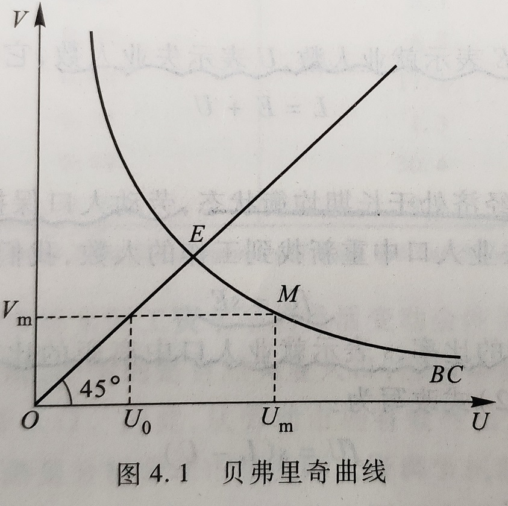
自然失业与劳动人口变化
我们用 $L$ 表示劳动人口，$E$ 表示就业人数，$U$ 表示失业人数：
$$
L = E + U
$$
失业率可以用 $U / L$ 来表示。
为了简化分析，我们假定经济处于长期均衡状态，劳动人口保持不变。因此就业人口中游离出来的失业人口数应该等于失业人口中重新找到工作的人数：
$$
fU = sE
$$
其中 $f$ 表示失业人口中再就业的比率，$s$ 表示就业人口中离职的比率。
利用 $L = E + U$ 式，改写为：
$$
fU = s(L - U)\\
U = \frac{sL}{s + f}
\\
因此，失业率决定式：\frac{U}{L} = \frac{s}{s + f}
$$
离职率越高，意味着从就业队伍中游离出来的失业人口越多，失业率就会越高；再就业率越高，意味着从失业大军重新上岗的人员越多，失业率则会越低。
职业搜寻
岗位空缺与失业
在摩擦性失业和结构性失业中，岗位空缺市场和失业市场并存，劳动者并不能在这两个市场之间自由转移。
1. 同质性：劳动者并不能及时地在市场之间自由转移，就会形成岗位空缺和失业并存的现象。这种市场之间转移所需的时间和成本就是劳动者的市场转移成本，其产生的根本原因就在于劳动者在技能上的差异，也就是劳动的不同质性。
2. 完全信息：劳动市场的信息并不是完全的，劳动者在寻找工作中必然产生成本，也就是职业搜寻成本。
职业搜寻模型，失业保障（略）
职业配给
（略讲）
实际工资水平的变动仍然起着配置劳动资源的作用。从实际工资调节功能出现障碍的角度来分析失业现象的理论也称为职业配给理论。这种理论认为，长期失业产生的原因是因为劳动资源在一些场合并不是通过劳动市场的实际工资进行调节，而通过某种制度或人为的因素进行分配。
宏观经济学的三个行为主体，政府企业和劳动者的行为都有可能对劳动市场的调节机制制造障碍。
最低工资（政府行为）
在最低工资的条件下，愿意就业的劳动人数仍为 $\bar{L}$，劳动的供给大于需求，于是 $\bar{L} - L$ 便成了最低工资法带来的非自愿失业人口。
有效工资（企业行为）
效率工资理论就是说明，企业为了提高劳动生产率，有可能主动地将实际工资水平定在高于市场出清的均衡水平上，从而导致了工人的失业。
工会（劳动者行为）
工会是由一部分劳动者组成，借以增加工人市场力量的组织。有组织的工人与雇主就工资水平进行谈判时，讨价还价的能力大大加强，工会工人的工资水平就不再由劳动市场的供求均衡水平决定，而是由工会与企业的集体谈判决定。集体谈判决定的工资水平往往会高于市场的均衡工资水平。
失业治理
失业的时间结构
从失业的时间结构来看，失业大致可分为短期失业和长期失业。
短期失业一般是指摩擦性失业，主要原因是由于寻找工作需要一定的时间和成本。
而长期失业有可能是产业结构调整导致的失业，也有可能是实际工资调节机制出现障碍造成的劳动市场供大于求。
失业的人口结构
1. 年龄
2. 受教育程度
3. 性别
4. 种族
失业治理政策
分为两类：主动性失业治理政策和被动性失业治理政策。
1. 主动性失业治理政策是在劳动供给方面做文章，是劳动供给在数量、结构和质量上符合市场上对劳动的需求。
2. 被动性失业治理政策基于这样的概念，在市场经济条件下，要彻底消除失业现象是不可能的，既然不能消除，我们就应该实施被动的失业治理政策，对失业者进行救济，也就是建立起一套完善的失业保障体系。
通货膨胀
货币的概念
货币的职能
货币是指那些流动性高、人们普遍愿意接受的资产（货币 $\neq 现金$）。
流动性高：变现能力和速度
货币的基本职能
1. 交易媒介
2. 计价单位
3. 支付手段
4. 价值贮存
货币的形态
其实，人们需要什么货币只是需要货币的几种职能，至于货币采取什么形式并不重要。
货币的分类和数量
从流动性出发，货币可进行如下分类：
1. C：流通中的现金
2. M1：C + 旅行支票 + 活期存款
1. 旅行支票：需要到银行进行交换
2. 活期存款：支票类存款无利益
3. M2：M1 + 储蓄存款 + 定期存款 + 零售型货币市场共同基金和其他存款
1. 定期存款：企事业的长期存款
我国：
1. C：流通中的现金（M0）
2. M1： C + 企业的活期储蓄存款 + 政府部门、社会机构和部队的储蓄存款 + 农村储蓄存款 + 个人信用存款
3. M2：M1 + 城市居民定期储蓄量存款 + 企业定期存款 + 外汇储蓄 + 信托储蓄
尽管在实际生活中，我们对货币资产的范围有不同的测算方法，但从最基本方面看，货币只由二部分构成：现金和存款。
存款在货币中占有绝大比重，现金只是起着辅助作用，这正是现代经济的一大特色。
支票和信用卡都不是货币。
货币数量论
数量方程式
$$
货币数量 \times 货币的平均流通速度 = 价格 \times 交易数量 \\
M \times V = P \times T
$$
方程式的右边反映了交易的情况。$T$ 代表一段时期内一个经济所有产品和服务交易的数量。$P$ 代表交易的平均价格。
方程的左边反映了用于交易的货币的情况。$M$ 代表一个经济的货币数量，$V$ 代表了货币的交易流通速度，用来衡量单位货币在一段时期内换手的速度。
将经济中的交易定位最终产品和服务即当期产出的交易，则可以得到数量方程的另一种形式：
$$
MV = PY
$$
$Y$ 代表当期产出的数量，即实际 GDP，$P$ 是当期产出的平均价格水平，$V$ 是货币的收入流通速度，代表 1 年中每一元钱用来购买最终产品和服务的平均次数。
将上式略作变换：
$$
\frac{M}{P} = \frac{1}{V}Y
$$
$M / P$ 表示一个经济实际货币的数量。
假定人们对货币的需求只是为了满足交易的需要，那么货币需求函数可表达为：
$$
\left(\frac{M}{P}\right)^d = kY
$$
人们愿意持有的实际货币数量是实际收入的一个比例。
货币市场的均衡：经济中实际货币的数量必须等于等人愿意持有的实际货币数量，也就是货币供给等于货币的需求：
$$
\frac{M}{P} = kY
$$
其中 $M / P$ 为实际货币供给。
货币数量与通货膨胀
将货币数量方程式 $MV = PY$ 写成变化率的形式：
$$
\frac{\Delta M}{M} + \frac{\Delta V}{V} = \frac{\Delta P}{P} + \frac{\Delta Y}{Y}
$$
1. $\Delta M / M$ 为货币数量的变化率，由中央银行决定。
2. $\Delta V / V$ 为货币流通速度的变化率
3. $\Delta P / P$ 为价格变化率，也就是通货膨胀率
4. $\Delta Y / Y$ 为实际 $GDP$ 增长率
从分析价格水平如何变化的角度，上式又可写成：
$$
\frac{\Delta P}{P} = \frac{\Delta M}{M} + \frac{\Delta V}{V} -\frac{\Delta Y}{Y}
$$
决定通货膨胀率有三个因素，一是货币供给量的增长率，而是货币流通速度的增长率，三是实际 $GDP$ 增长率。
从短期来看，货币流通速度 $V$ 会受到某些制度和技术因素的影响而产生变化：但从长期来看，$V$ 相对稳定，一般不会随着时间的变化而变化，即 $\Delta V = 0$。因此：
$$
\frac{\Delta P}{P} = \frac{\Delta M}{M} - \frac{\Delta Y}{Y}
$$
中央银行的货币供给行为最终决定着经济中的通货膨胀率。
在实际经济增长率不变的情况下， 如果中央银行决定将流通中的货币供给量增长率 $\Delta M / M$ 提高 $1 \%$，通货膨胀率 $\Delta P / P$ 就会上升 $1\%$，通货膨胀纯粹是一个「货币现象」。
古典两分法
名义变量对实际变量没有影响。名义变量是指由货币计量的一些经济变量，如价格水平、名义利率等等。实际变量是指经济中那些不依赖货币而存在的变量，如商品的相对比价、实际利率、总产出、就业量、失业量。
实际变量由经济中各市场的一般均衡来决定，而名义变量则取决于货币的供给数量。货币供给数量增加，只会导致普遍的价格水平的上升，而不会改变厂商和家庭的决策，也不会改变产出和就业这类实际变量。
由于上述观点将名义变量与实际变量分割开来犹如泾渭分明，互不影响，因此被称为古典的二分法。
长期均衡中名义经济和世纪经济的关系。
货币政策与铸币税
货币数量论的政策含义也十分简单明了。既然通货膨胀纯粹是一种货币现象，那么，政府只要控制货币供给量就可以控制通货膨胀。
但实际上，政府要做到这一点很难。这是因为政府的行为并不是孤立的，而是受到一定的社会经济条件制约。
如果中央政府通过发行货币来为其预算开支进行融资的话，那么融资会导致物价水平的上升，使得公众手中货币的实际购买力下降。因此，发行货币以提高政府收入就如同向广大的货币持有者征收了一笔通货膨胀税，通常也被称为铸币税。当经济陷入恶性通货膨胀的时候，铸币税往往是政府的主要收入来源。
通货膨胀与利率
实际利率与名义利率
银行所支付的利率是名义利率，而考虑了通货膨胀因素的利率是实际利率。
用 $r$ 表示实际利率，$i$ 表示名义利率，$\pi$ 表示通货膨胀率：
$$
i = r + \pi
$$
该等式被称为费雪方程式。名义利率的变动可以由两方面的因素引起：一个是实际利率 $r$ 的变动，另一个是通货膨胀率 $\pi$ 的变动。
事前和事后利率
对于实际利率而言，有一个重要的区分，即：事前实际利率和事后实际利率。
所谓事前实际利率，是指借款人和贷款人在签订借款合同利率。
事后实际利率，则是指按照借贷合同上的名义利率所最终实现的实际利率。
由于名义利率是人们在签订合同时所形成的，而在签订合同人们尚不知道未来的实际通货膨胀率，因此名义利率职能基于预期的通货膨胀率进行调整，用 $\pi^{e}$ 表示预期的通货膨胀：
$$
i = r + \pi^{e}
$$
其中 $r$ 由可贷资金市场的均衡所决定，因此，名义利率将随着预期通货膨胀率的变动而变动。
名义利率和通货膨胀
货币不仅有交易媒介的功能，还有价值贮存的职能。
人们对货币资产的流动性有一种偏好。这部分拿在手头的货币满足了人们对流动性的需求。因此，人们持有货币，或者说选择流动性的机会成本就是名义利率。
由于持有货币的机会成本等于名义利率，因此，人们对货币或流动性的需求应该和名义成反比。将这一结论同货币数量论相结合，我们可以得到人们对货币的另一种需求函数：
$$
\left(\frac{M}{P}\right)^d = L(Y, i)
$$
从流动性偏好出发，货币需求是实际收入和名义利率的函数，这种需求也称为流动性偏好需求。
人们对实际货币的需求与收入同方向变化，与名义利率反方向变化。
将费雪方程式代入上式：
$$
\frac{M}{P} = L(Y, r + \pi^e)
$$
货币增长与通货膨胀
我们将上式写成增长率的形成：
$$
\frac{\Delta P}{P} = \frac{\Delta M}{M} - \frac{\Delta L(Y, r + \pi^e)}{L(Y, r + \pi^e)}
$$
价格水平的上涨速度取决于货币供给量的增长率和实际货币需求量的增长速度。实际货币需求的增长率取决于两个宏观经济变量：实际 $GDP$ 和名义利率水平。
只要货币的增长速度保持稳定，名义利率水平就是一个相对稳定的常数，不会随着时间的变化而变化。因此，我们有充分的理由相信，长期中实际货币需求函数的变化最终取决于实际收入 $Y$ 的变化。
我们用 $\eta_Y$ 表示货币需求的收入弹性，即实际收入每变化一个百分点带来实际货币需求的百分比变化，那么上式可写成：
$$
\frac{\Delta P}{P} = \frac{\Delta M}{M} - \eta_Y\frac{\Delta Y}{Y}
$$
从长期来看，实际 $GDP$ 的增长速度趋于稳定。在长期中，一国的通货膨胀率仍然取决于货币供给量的增长速度。
通货膨胀无论在哪里都只是一种货币现象。
—— 货币主义者 弗里德曼
通货膨胀的社会成本
劳动者的实际收入取决于劳动的边际产出，而劳动的边际产出又取决于资本数量和技术水平，因此实际收入的决定与通货膨胀并没有关系。
那通货膨胀到底会造成哪些危害？
预期到的通货膨胀
预期到的通货膨胀引发的问题的大小与通货膨胀的高低有很大的关系。
低通货膨胀不会对人们的决策行为产生太大的冲击。
在高通货膨胀率下。
1. 人们知道货币将以非常快的速度贬值，货币贬值的比率就是持有货币的机会成本。此种机会成本越高，人们持有货币的意愿就越低，也就越倾向于将收入转化为商品。对企业来讲，会以最快的速度将销售收入以工资付给工人。
2. 准确地预测通货膨胀将比发明一种新产品更加有利可图。大量的职业转向是对有限人力资源的极大浪费，这是通货膨胀的最大危害。
3. 税收的扭曲。税收条款都没有考虑到通货膨胀的后果。
未预期到的通货膨胀
除了造成各种社会成本，还有另一个特征：产生财富再分配。
1. 借款者与贷款者：如果实际的通货膨胀率高于签订合约时预期的通货膨胀，则未预期到的通货膨胀为正，贷款者（消费者）受损失，而贷款者（银行）得益。反之相反。
2. 工人与雇主：与通货膨胀率超过人们的预期，原先定的工资就显得低了，无法买到与其数量的物品，而雇主的利润相应地高于原先的预期。由于大部分的人们都是风险规避的，因此这种由未预期到的通货膨胀所产生的不确定性降低了人们的福利，从而造成了社会成本。
恶性通货膨胀
恶性通货膨胀一般是指月通货膨胀率超过 50% 的通货膨胀。
在恶性通货膨胀下：
1. 交易成本非常高，人们不得不花大量精力来管理自己的现金
2. 反映资源稀缺性的相对价格几乎失去了意义。
3. 价格也无法根据相对价格来做出消费决策，消费者为了避免损失，往往囤积商品。
4. 税收体系严重扭曲。政府收入来源不再是税收，而是靠发行货币，而这又会进一步助长通货膨胀。
开放经济
贸易与资本流动
开放条件下的总支出
如果一国经济对外开放了，我们用 $X$ 表示本国的出口，即外国用于购买本国产出的服务的支出，用 $C^f$ 表示私人消费中用于购买国外产品和服务的支出；用 $I^f$ 表示私人投资中用于购买国外产品和服务的支出，用 $G^f$ 表示政府部门用于购买外国产品和服务的支出，那么，国民收入可写为：
$$
Y = (C - C^f) + (I - I^f) + (G - G^f) + X
$$
改写为：
$$
Y = C + I + G + X - (C^f + I^f + G^f)
$$
我们将一国所出口的产品和服务的价值总和减去所进口产品和服务的价值总和和后得到的净值定义为净出口，用 $NX$ 表示，即：
$$
NX = X - (C^f + I^f + G^f) \\
\therefore Y = C + I + G + NX
$$
对外净投资与净出口
将上式改写为：
$$
Y - C - G = I + NX
$$
等式的左边 $Y - C - G$ 为国民储蓄，用 $S$ 表示国民储蓄，于是：
$$
S = I + NX
$$
此时 $NX$ 净出口，同时也是国外净投资，为什么呢？
原因：国际收支平衡。当一国净出口为正，即出口大于进口，因为国际收支平衡，国外相当于要借钱买我们的东西，此时也就相当于我们对国外的投资。
此式子表明，一国储蓄有两个用途：一是用于国内的投资，而是用于对外的投资。
效果开放经济模型
基本模型
1. 产出由投入要素的数量和生产函数所反映的技术关系决定。由于在长期中，投入要素的数量是固定的。同时我们认为这里的长期还没有长期足以使技术水平发生变化。因此，产出成了一个固定的值，我们得到：
$$
Y = \bar{Y} = F(\bar{K}, \bar{L})
$$
2. 我们假定私人消费与私人部门的可支配收入正相关，其间的函数关系用 $C$ 表示，表示如下：
$$
C = C(Y - T)
$$
3. 私人部门的意愿投资与实际利率成反比：
$$
I = I(r)
$$
4. 我们用 $r$ 表示这个小国的利率水平，用 $r^*$ 代表世界市场上的均衡纪律，于是有：
$$
r = r^*
$$
在开放经济中，国民收入账户体系中存在如下的恒等式：
$$
NX = Y - C - G - I
$$
由于储蓄等于私人储蓄加上公共储蓄，即 $S = Y - C - G$，因此：
$$
NX = S - I
$$
将上面的四个假设代入式子，则有：
$$
NX = [\bar{Y} - C(\bar{Y} - T) - G] - I(r^*)
$$
显然：
$$
NX = \bar{S} - I(r^*)
$$
按照我们的假定，$S$ 取决于财政政策，与利率无关，因此在图中都是一条垂直线。投资与市场利率 $r$ 负相关，因此是一条向右下倾斜的曲线。在封闭经济条件下，市场均衡利率 $r_c$ 由储蓄曲线 $S$ 和投资曲线 $I$ 的交点 $E$ 决定。而在小国开放经济模型下，利率是由世界市场上的均衡利率 $r^*$ 决定。
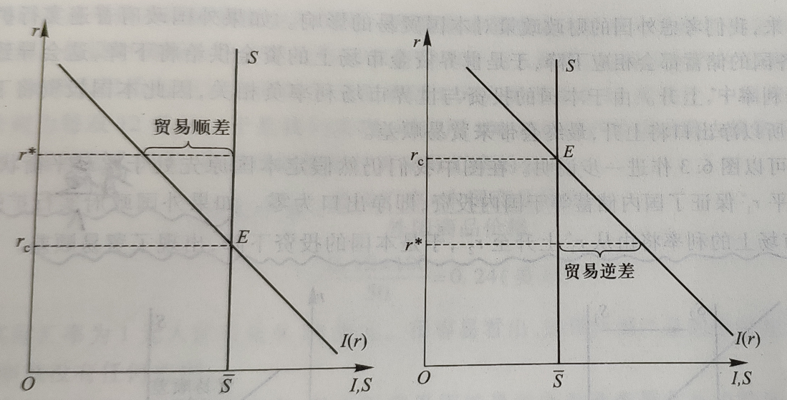
情况一：假定世界市场的均衡利率 $r^*$ 大于封闭经济的均衡利率 $r_c$，如上图 (a) 所示。本国的储蓄大于私人部门的意愿投资。但在开放经济条件下，利率水平由世界市场决定，当本国的储蓄大于私人投资时，多余的储蓄可以流向世界资金市场，形成对外国的投资。
情况二：世界市场的均衡利率小于封闭经济的均衡利率，同理。
也可由 $\bar{S} = I + NX$，推得，当世界市场利率大，对国内投资 $I$ 减少，$NX$ 增加。
宏观政策与贸易
扩张性财政政策 & 紧缩性财政政策
假定本国政府实行扩张性财政政策，这时，政府支出增加，或税收减少，或者两者同时发生。由于 $S = Y - C(Y - T) - G$，都会导致储蓄下降，又由于 $NX = S - I$，因此，储蓄下降又会导致净出口下降，而净出口的持续下降将使一国的贸易收支出现赤字。
如果外国政策普遍实行扩张性政策（货币供给不足，利率增加），还是上图可知，世界市场上的利率上升，于是本国的投资下降，出现贸易逆差。
同理可推外国政策普遍实行紧缩性政策。
汇率与净出口
名义汇率与实际汇率
汇率是本国货币相对于外国货币的价格。
1. 名义汇率是指两国间货币的相对价格。
2. 实际汇率是指两国间商品的相对价格。
如果用 $e$ 来表示名义汇率，$P$ 表示本国物价水平（以本币计），$P^*$ 表示外国物价水平（以外币计），则实际汇率 $\varepsilon$ 可用下式表示：
$$
\varepsilon = e \frac{P}{P^*}
$$
实际汇率的决定机制
实际汇率与进出口负相关；根据小国开放经济模型，进出口又必须等于对外净投资，即国民储蓄 $S$ 减去投资 $I$ 后的净值。在小国开放经济中，国民储蓄取决于收入和政府政策；投资则取决于世界资金市场上的均衡的利率水平，两者都认为是事先给定的变量，于是，净出口与对外净投资相等便决定了均衡实际汇率水平。
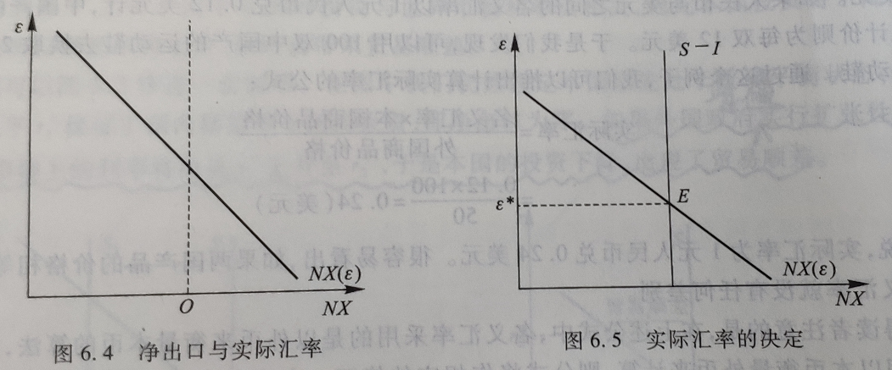
经济政策的影响
如果政府通过增加支出或减税来实施扩张性的财政政策，则本国储蓄将下降，$(S - I)$ 也下降，从而导致实际汇率的上升和净出口的减少。
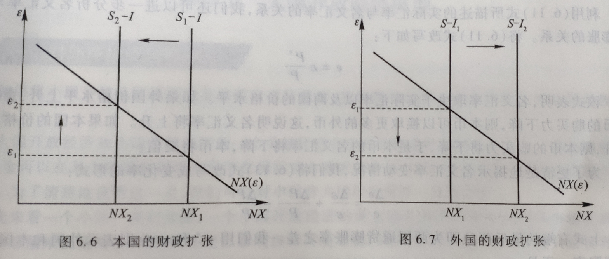
如果外国政府实施扩张性的财政政策，外国政府支出增加或税收减少，将提高世界世行的均衡利率水平，导致本国投资下降，于是出口产品的供给 $(S - I)$ 将增加
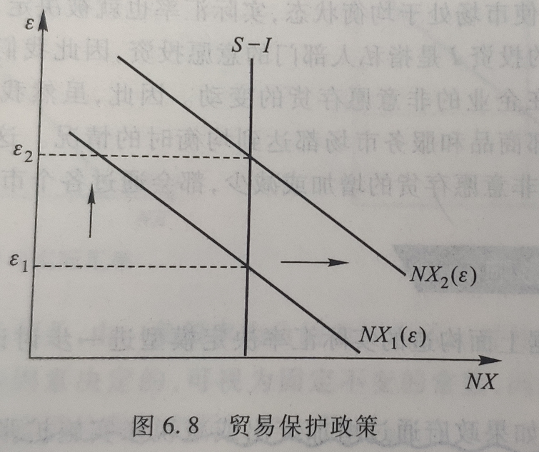
无论是关税壁垒还是进口配额，都会使得净出口水平上升。
从图中，就能得到一个有趣的结论：
限制进口的贸易保护主义政策并没有增加进出口产品数量。
这是由于限制进口导致了实际汇率增加 → 本国产品相对价格提高 → 本国出口数量减少，从而抵消了进口的减少。但是限制进口的贸易保护政策会影响一国贸易总额。虽然净出口数量不变，但是一国的进口和出口数量都同比例下降了，所以贸易总额下降了。
名义汇率与通货膨胀
实际汇率 $\varepsilon$ 用下式表示：
$$
\varepsilon = e \frac{P}{P^*}
$$
为了更清楚地揭示名义汇率变动情况，可将上式改写成变化率的形式：
$$
\frac{\Delta e}{e} = \frac{\Delta \varepsilon}{\varepsilon} + \frac{\Delta P^*}{P^*} - \frac{\Delta P}{P}
$$
上式右端的最后两项即为两国同时膨胀率之差。我们用 $\pi^*$ 和 $\pi$ 分别表示外国和本国的通货膨胀率。于是：
$$
\frac{\Delta e}{e} = \frac{\Delta \varepsilon}{\varepsilon} + (\pi^* - \pi)
$$
上式表明，名义汇率的变化率等于实际汇率的变化率加上两国通货膨胀率之差。
通过以上分析，我们可以发现货币政策对名义汇率的影响。在开放经济条件下，通货膨胀率的上升还将进一步导致本币的贬值。因此，一国货币供给量的增加不仅会导致本国物价的普遍上涨，也是的本币衡量的外国货币的价格上升。
现在，我们可以将效果开放经济中不同经济政策对各种变重的影响总结在下表中：
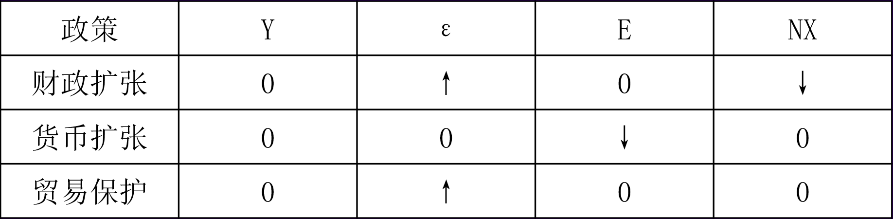
大国开放经济模型
对我净投资与利率
如果将小国开放经济模型的某些假定进行修改，我们就可以把上述分析推广到大国开放经济中去。
大国开放经济和小国开放经济的一个关键区别在于对外净投资和利率的关系。在小国开放经济中，利率是固定的，资本可以在国际间自由流动，因此小国在开放经济模型也称为资本完全流动模型；而在大国开放经济中，资本国际间流动会带来利率的变化，不能完全自由，因此大国开放经济模型也称为资本不完全流动模型。
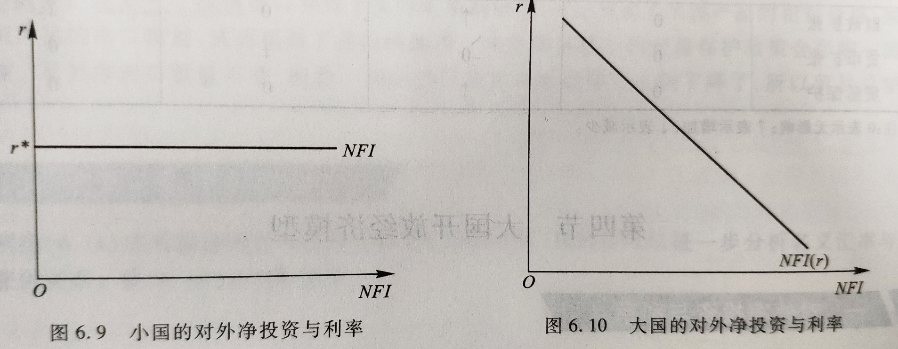
大国开放经济模型
与小国开放经济模型的分析类似，我们需要考察两个市场的的均衡情况：可贷资金市场和净出口商品市场。前者与利率的决定有关，后者则与汇率的决定相联系。
在可贷资金市场上，均衡可以用下式来表示：
$$
S = I + NFI
$$
上式可以改写为：
$$
\bar{S} = I(r) + NFI(r)
$$
在净出口商品市场上，国民收入账户的会计恒等式为：
$$
NX = S - I
$$
上式可以改写为：
$$
NX(\varepsilon) = NFI
$$
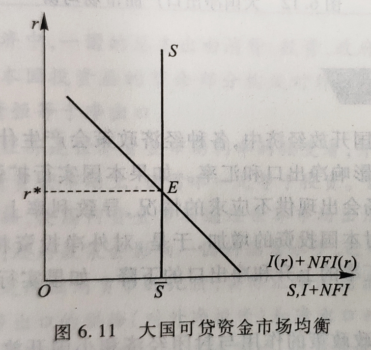
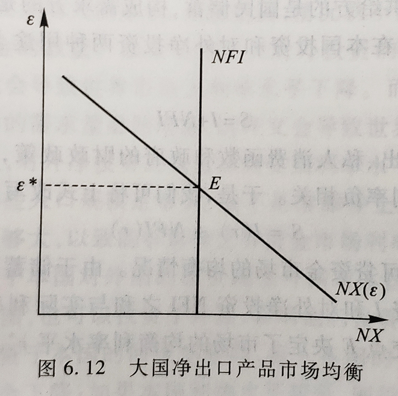
由于储蓄 $S$ 利率不相关，所以在图中用一条垂直线表示。国内投资 $I$ 和对外净投资 $NFI$ 之和与实际利率负相关，可用一条向右下倾斜的曲线表示。两条曲线的交点 $E$ 决定了市场的均衡利率水平 $r^*$。
图中向下倾斜的 $NX$ 曲线与垂直的 $NFI$ 曲线决定了均衡的实际利率水平 $\varepsilon^*$。
经济政策效果
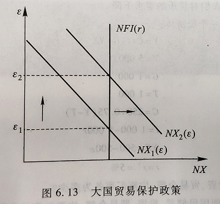
在封闭经济中，储蓄的下降导致投资的同比例下降，财政政策挤出了私人投资；在小国开放经济中，投资由世界市场上的利率水平决定在一个常数上，储蓄的下降导致净出口的同比例下降。而在大国的开放经济中，储蓄的下降同时导致国内私人投资的下降和净出口的下降。
本国货币政策仍然是中性的。限制进口的贸易保护政策对大国开放经济与小国开放经济的作用是类似的。
总需求与总供给
总需求曲线
总需求和总需求曲线
总需求是指社会在一定价格水平下所愿意购买的产品和服务的总量，也就在对实际国内生产总值（GDP）的需求。
按照总需求的定义，用 AD 代表总需求，总需求由以下四个部分构成：
$$
AD = C + I + G + NX
$$
$C$ 代表消费需求，是指国内居民对产品和服务的需求；$I$ 代表投资需求，是指企业购买资本品的需求；$G$ 表示政府需求，是指政府采购产品和服务的需求，$NX$ 代表净出口需求，是指外国购买本国产品的服务的净需求。
用纵轴代表一个经济总价格水平 $P$，用横轴代表总产量 $Y$，用 $AD$ 代表总需求曲线，就可以画出一条表示总价格水平和总需求量之间关系的总需求曲线。
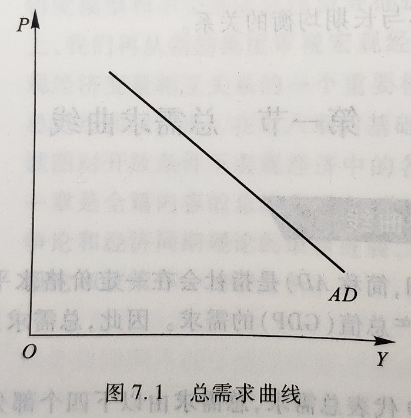
总需曲线：从图中可以看到，总需求曲线向右下方倾斜，表示随着价格水平的提高，人们愿意购买的产品和服务的总量不断下降；而随着价格水平的下降，人们愿意购买的产品和服务的总量不断上升。
总需求曲线向下倾斜主要取决于下列三个因素：
1. 财富效应
2. 利率效应
3. 开放效应
总需求曲线的变动
1. 预期：
预期包括预期收入、预期利润率、预期通货膨胀等。
预期未来收入提高时会增加当前的个人消费需求，从而使总需求曲线右移。反之左移。
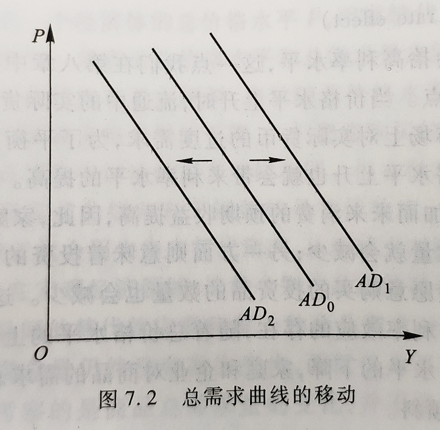
2. 政府政策
按照对总需求的不同作用，宏观经济政策可分为：
扩张性政策：增加政府支出、降低税收的财政政策会直接扩大总需求，使总需求曲线向右移动；扩大货币供应量、降低利率水平的货币政策会增加总需求，使总需求曲线向右移动。
紧缩性政策：减少政府支出、提高税收的财政政策会直接抑制总需求，使总需求曲线向左移动；缩小货币供应量、提高利率水平的货币政策会抑制总需求，使总需求曲线向左移动。
3. 世界经济
利率的变动：汇率上升意味着本国商品的相对价格上升，外国商品相对价格下降，本国人将扩大对进口的需求而外国人将减少对出口的需求，于是，本国净出口将减少，总需求下降，总需求曲线向左移动；汇率下降的作业相反。
外国收入的变动：外国收入增加会扩大对本国商品的需求，在进口不变的情况下增加净出口需求，总需求上升，总需求曲线向右移动，反之则相反。
总供给曲线
总供给是指在任一价格水平下，企业所愿意提供的产品和服务的总量，因此，总供给曲线反映了价格水平和总供给量之间的关系。
1. 古典总供给曲线（垂直线）
2. 一般总供给曲线（向右上方倾斜）
3. 凯恩斯总供给曲线（水平）
长期总供给曲线（LAS 古典总供给曲线）
垂直的长期总供给曲线表示了一个社会长期总产出 $\bar{Y}$ 不受价格变动的影响，而是由技术进步和资本、劳动等要素投入数量决定。（$\bar{Y}$ ：充分就业下的总产出水平）
由于生产要素都得到了充分利用，因此，在长期总供给水平上失业率等于自然失业率。（除了技术进步，不会受价格的影响）

在充分就业下，劳动等生产要素得到充分利用，总产出不随价格的变化而变化，工资与价格可充分调整，工资与价格同比例变动。
假定政府采取增加货币供应量的扩张性货币政策，使总需求曲线由 $AD_0$ 移动至 $AD_1$，相应的均衡点变为 $B$，价格水平从 $P_0$ 上升到 $P_1$ 而总产出 $\bar{Y}$ 仍然保持不变。
短期总供给曲线（SAS 一般、凯恩斯总供给曲线）
凯恩斯总供给曲线：
工资具有绝对刚性，货币工资不会轻易变动，此时存在大量的失业人口生产能力（可能由于工会等原因，导致工资一直处于最低工资线）在既定的价格水平下，厂商愿意供给社会所需求的任何数量，即在现行工资水平下，厂商获得任意数量劳动力，若其提高价格，其他厂商可用原有价格提供足够的产量。
一般总供给曲线：
工资可适当调整，但相对价格变动存在滞后，即对价格上升不敏感，当价格上升时，企业利润增加，企业会扩大再生产，社会总产出增加。
总供给曲线的变动
1. 长期总供给曲线的变动
人口和资本存量增加以及技术基本都会增加总供给。
长期总供给的增加意味着与之对应短期总供给也会增加。
2. 短期总供给曲线的变动
我们假定工会的成立增强了工人集体谈判的能力，使工人的工资水平上升。这样在产品价格不变的情况下企业利润会减少，因此企业会减少总产量，使短期总供给曲线向上移动。
值得注意的是，成本上升并不会造成一个社会人口和资本存量的变化，也不会改变当前技术状况，因此长期总供给曲线并不会发生变化。
宏观总量的短期均衡
短期均衡与经济波动
总需求曲线 $AD$ 和短期总供给曲线 $SAS$ 在 $E$ 点相交，此时，从短期来看，社会总需求量正好等于总供给量。
此时决定的均衡价格水平是 $P^*$，均衡总产量是 $Y^*$。
1. 失业均衡
失业均衡是指短期均衡产量低于长期潜在产量的均衡状态。
2. 充分就业均衡
充分就业均衡是指短期均衡产量正好等于长期潜在产量的均衡状态。
3. 超充分就业均衡（经济过热）
超充分就业均衡是指短期均衡产量大于长期潜在产量的均衡状态。
一个经济体可能出现哪种短期均衡状态不是一个随机的过程，而是由三种均衡状态依次不断转化构成的有一定规律的过程。
总需求冲击
假定政府认为目前经济可能要转入衰退阶段，决定增加货币供应量以「刺激」经济。货币供应量的增加会扩大总需求，使总需求曲线向右移动。
通过以上的分析我们可以发现，正向的总需求冲击在长期内并不能改变社会的潜在产出，而只会提高价格水平，带来通货膨胀。
总供给冲击
最典型的也是最具影响力的总供给冲击来自 20 世纪 70 年代初期石油输出国组织的限产提价政策。在这一政策支配下，世界石油市场的石油供给急剧减少，油价大幅度上涨，如 1971—1974 年间石油的实际价格上涨了四倍，从而导致了企业成本增加，使短期总供给曲线向左移动。
现在假设石油价格突然上涨，短期总供给曲线由 $SAS_0$ 移动到 $SAS_1$，短期均衡点从 $A$ 点移动到 $B$ 点，相应的均衡价格水平和均衡总产量分别变为 $P_1$ 和 $Y_1$。$B$ 点和 $A$ 点相比，价格水平上升，实际产出下降，失业率要大于自然率，整个社会处在失业均衡状态。这种通货膨胀与经济衰退并存的现象也称为「滞胀」。
政策制定者面临由于总供给波动而引起的滞涨时，一般有两种选择：
1. 选择是保持总需求曲线不变，等待市场机制进行调节
2. 扩大总需求，这样，经济可以避免长期衰退的痛苦，但必须付出通货膨胀的代价。
总需求理论
国民收入的决定
计划支出线
又叫意愿支出线、计划需求线、意愿需求线
一个社会中家庭、企业和政府所愿意购买的产品和服务的总量定义意愿或计划总支出，并用 $E$ 来表示，那么 $E$ 有三个部分构成：
$$
E = C + I + G
$$
消费 $C$ 是可支配收入 $(Y - T)$ 的函数，其中 $Y$ 代表收入，$T$ 代表税收：
$$
C = C(Y - T)
$$
为了简化分析，假定政府税收 $T$ 为零，消费函数可以用如下的线性方程表示：
$$
C = a + bY
$$
其中 $a$ 为自生消费，$b$ 为边际消费倾向。这样，计划支出 $E$ 可以进一步表示为：
$$
E = a + bY + I + G
$$
自生消费 $a$、投资 $I$ 和政府购买 $C$ 都与收入变动无关，它们属于自生支出，用 $A$ 来表示：
$$
A = a + I + G
$$
$bY$ 是随着收入增加而增加的支出，因此属于派生支出，用 $eY$ 来表示，$e$ 代表边际支出倾向，表示每增加一单位收入所增加的支出，即：
$$
e = \frac{dE}{dY}
$$
又可以表示为：
$$
E = (a + I + G) + bY \\
或者：E = A + eY
$$
这表明计划总支出由自生支出 $A$ 和派生支出 $eY$ 两个部分组成。
国民收入的决定理论
在图上做一条 45° 线，此线上每一点都代表计划支出 $E$ 和实际支出 $Y$ 相等。
当实际支出为 $Y_1$ 小于均衡的支出 $Y_2$ 时，计划支出线 $E$ 在 45° 线的上方，表明此时计划支出大于实际支出，也就是说，人们愿意购买的商品数量要大于企业在正常情况下提供的商品数量，在这种情况下，企业会选择增加雇员，扩大产量的做法，使实际存货回到计划的水平。
☆收入和支出的变动
在这里，我们假定政府购买增加使自生支出增加。
当政府购买增加 $\Delta G$ 以后，计划支出线由 $E_0$ 向上平行移动 $\Delta G$ 单位至 $E_1$，在新的均衡点 $B$ 点处，均衡国民收入也随之增加。
自生支出的增加对于总收入的扩张具有成倍的放大效应，我们把这种放大效应叫做自生支出乘数，用 $k$ 来表示：
$$
k = \frac{\Delta Y}{\Delta A}
$$
自生支出乘数也表现为政府购买乘数：
$$
k = \frac{\Delta Y}{\Delta A} = \frac{\Delta Y}{\Delta G}
$$
假定边际支出倾向 $e = 0.5$，政府购买一次性增加了 100 万元，我们考察这个额外增加的 100 万元对总收入的影响。首先，随着 100 万元的政府购买的投入，总支出直接增加了 100 万元，即人们的总收入也增加了 100 万元，在收入水平增加的情况下，由于边际支出倾向 $e = 0.5$，消费也将增加 50 万元，同时总支出或总收入也增加了 50 万元.....
所以：
$$
\Delta Y = \Delta G + e \times \Delta G + e^2 \times \Delta G + \ldots + e^n \times \Delta G
$$
设 $n \to \infty$，利用简单的等比数列求和公式和求极限原理，既可以计算出：
$$
k = \frac{1}{1 - e}
$$
乘数效应表明，在总需求不足的情况下，政府只需启动微小的政策变量，就可以对总需求的扩张产生较大的影响。
入股我们再引进税收 $T$，那么计划总支出为：
$$
E = C(Y - T) + I + G
$$
假定政府统一指征收比例税，即 $T = t \cdot Y$，其中 $t$ 为边际税率，即每增加一单位收入所增加的税收，上式可写成：
$$
E = C(Y - t \cdot Y) + I + G
$$
再假定消费函数是线性消费函数，则有：
$$
e = \frac{dE}{dY} = b(1 - t)
$$
边际支出倾向与边际消费倾向 $b$ 成正方向变化，而与税率 $t$ 成反方向变化。
这表明，在自生支出不变的情况下，税率的降低加大了边际支出倾向，从而导致了均衡的国民收入的增加。
利率的决定
货币的需求
凯恩斯理论认为，人们持有货币是由流动性偏好决定的。所谓流动性就是指持有货币在交易过程中的便利性，而人们愿意持有货币以保持这种便利性的倾向，就被称作流动性偏好。
流动性偏好产生的原因归结于人们的三个动机：
1. 交易动机：是指人们持有一定数量货币的目的是为了日常交易（与收入水平 $Y$ 相关）
2. 预防动机：预防动机是指人们为了应付意外事件而持有一定数量的货币（也与收入水平 $Y$ 相关）
3. 投机动机：投机动机是指人们持有货币是为了在证券市场上进行投机，利率 $r$ 则是持有货币的机会成本（此动机与利率 $r$ 负相关）
货币的需求函数可表达为：
$$
\left(\frac{M}{P}\right)^d = L(r, Y)
$$
如果我们假定收入不变 $Y = \bar{Y}$，横轴表示实际货币数量，纵轴表示实际利率水平，货币需求曲线 $MD$ 向右下倾斜。
货币的供给
货币供给量 $M$ 是外生决定的，它是中央银行所独立控制的政策变量，因此，货币供给函数 $(M / P)^s$ 如下：
$$
\left(\frac{M}{P}\right)^s = \frac{\bar{M}}{P}
$$
$\bar{M}$ 表示由中央银行控制的现在货币数量。
货币的供给曲线 $MS$ 在图中就是一条与横轴垂直的直线，表示货币供给的数量与利率的高低无关。
利率水平的决定
把货币需求曲线 $MD$ 和货币供给曲线 $MS$ 结合起来，就可以得到货币市场的均衡。
利率传导机制
货币供给量的增加，会使利率水平下降，从而导致投资的增加，最终引起收入的上升，这被称作为「利率的传导机制」。
在计划总支出 $E$ 中再配上投资函数，即：
$$
E = C(Y - T) + I(r) + G
$$
计划总支出不仅是收入 $Y$ 的函数，而且也是利率的函数，$I = I(r)$。于是，就可以考察利率的货币传导机制。
中央银行扩大货币供给量 → 投资水平上升 → 计划支出线上升。
这样，整个经济就完成了利率传导机制的一个过程，通过利率的传导，扩张性的货币政策带来了均衡国民收入的增加。
IS - LM 模型
也叫做二市场均衡模型：产品市场均衡（IS），货币市场均衡（LM）
产品市场均衡 IS
假设条件：市场封闭
均衡条件：$Y_d = Y_s \Rightarrow$ 总支出 = 总收入
$C + I + G = C + T + S$
1. 三部门情况：$S + T = I +G$
2. 二部分情况：$S = I$
推导
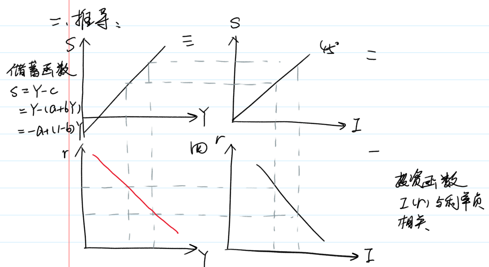
在保证市场均衡的条件下，IS 曲线上的每一点表现为利率与收入的组合，两者呈负相关关系（在二部门条件下）
例如：
$$
I = 1250 - 150r \\
S = -500 + 0.5Y
I = S \Rightarrow r - Y 的方程
$$
IS 曲线的斜率，影响因素有哪些
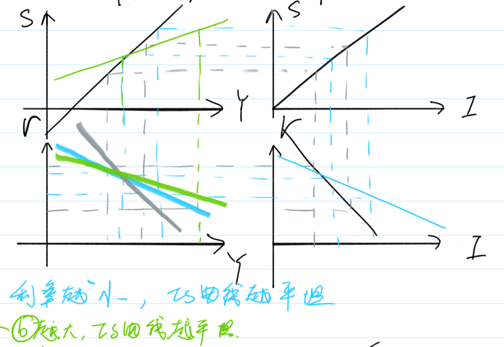
利率较小的变动，需求有较大的变动，与之相配合才能使产品市场均衡。
IS 曲线的移动
二部门：
1. 技术创新的产生、企业家预期提高，在利润既定的情况下，投资曲线向右移动，同时 IS 曲线向右移动。
2. 更节俭，储蓄意愿增加，储蓄曲线（三象限）向左移动，同时导致 IS 曲线向左移动。
三部门：
$$
Y = C + I + G = a + b(Y - T) + I + G \\
I = e - dr \\
Y = a + b(Y - T) + e - dr + G \\
Y = \frac{\bar{a} + \bar{e} + G - \bar{bT}}{1 - b} - \frac{\bar{dr}}{1 - b} \\
\Delta Y = \frac{1}{1- b} \Delta G \\（政府采购乘数效应，在投资不变情况下）
$$
结论：$G$ 增加，$Y$ 也增加，扩张性财政政策使 IS 曲线向右移动。
同理：在投资不变的情况下， 政府购买既定：
$$
\Delta Y = -\frac{b}{1- b}\Delta T
$$
税收的乘数效应。
结论：$T$ 增加，$Y$ 减少，IS 曲线向左移动，紧缩性财政政策使 IS 曲线向左移动。
货币市场均衡 LM
货币市场的均衡条件：
$$
货币供给 = 货币需求 \\
M_s = M_d \\
M_d 受到交易动机（Y），预防动机（Y），投资动机影响（r）（投资与利率负相关） \\
$$
LM 曲线的推导
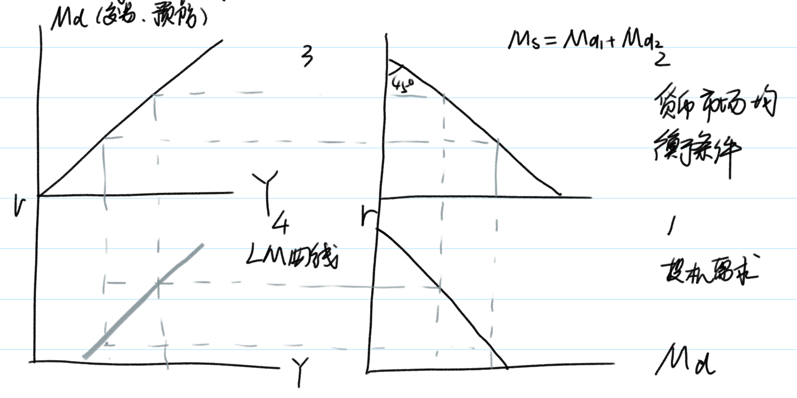
LM 曲线的定义：满足货币市场均衡条件时，LM 曲线上的点表达为国民收入与利率的组合，两者呈正相关系。
1. 投资需求平坦 → LM 平坦
2. 交易，预防需求平坦 → LM 平坦
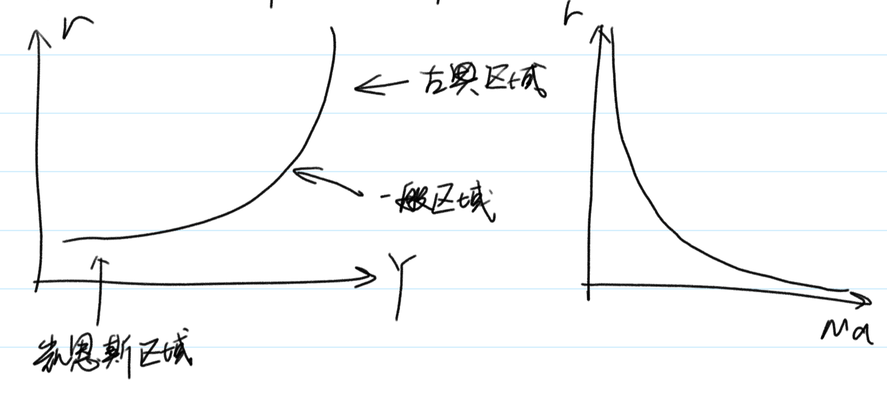
1. 凯恩斯区域又被称为凯恩斯陷阱，当 $r$ 降至很低时，货币的投资需求趋向于无限大，对应 LM 为水平状态区域。
2. 当 $r$ 很高时，货币的投资需求趋向于零，对应的 LM 曲线为垂直区域。
3. 两者之间为中间区域或一般区域
LM 曲线的移动
1. 投资需求曲线右移 → LM 左移
2. 交易、预防需求曲线右移 → LM 右移
3. 货币供给右移 → LM 右移
IS - LM 均衡
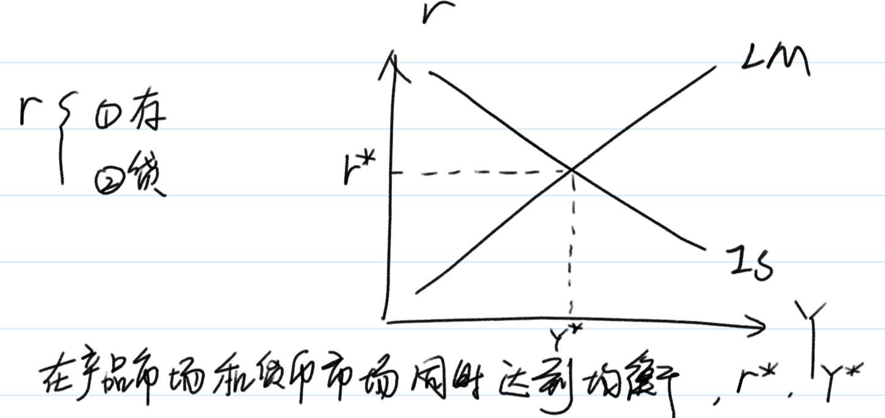
IS - LM 曲线均衡时，不一定是充分就业水平，仅靠市场自发调节无法达到目标，需要国家靠财政政策或货币政策来调节。
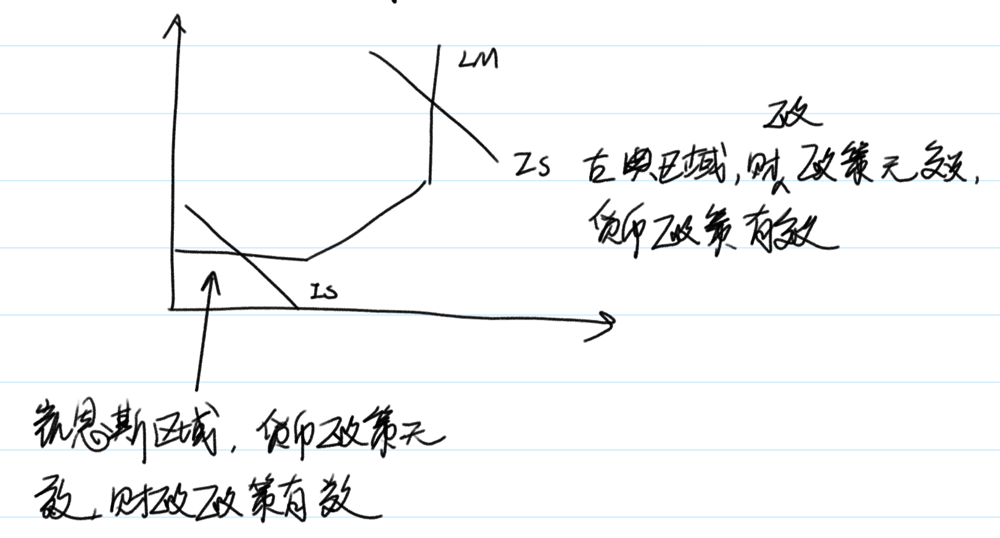
菲利普斯曲线
PC 线的提出（菲利普斯曲线的提出）& 修正
$$
\frac{W}{P} = MP_L
$$
修正公式：通胀率 = 货币工资增长率 - 劳动增长率（不是劳动生产率的增长率）
$$
lnW - lnP = lnMP_L \\
\frac{dW}{W} - \frac{dMP_L}{MP_L} = \frac{dP}{P}
$$
则有：
$$
\pi = -\beta(u - u_n) \\
（u 为实际失业率，u_n 为自然失业率，n = nature）
$$
PC 线的经济学推导
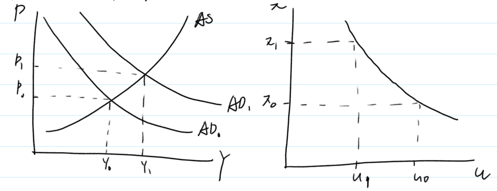
PC 线的政策含义
1. 若 $\pi$ 与 $u$ 组合落在安全区域，无需采取政策；
2. 若 $u$ 超过临界点，采取扩张性政策，$\pi \uparrow，u \downarrow$；
3. 若 $\pi$ 超过临界点，采取紧缩性政策，$\pi \downarrow，u \uparrow$；
附加预期的 PC
$$
\pi = \pi_e - \beta(u - u_n)\\
\pi = \pi_e \Rightarrow u = u_0
$$
弗里曼德指数，PC 线忽略了工资变动的重要因素，即对通货膨胀的预期，人们关注的不是名义工资，而是实际工资，针对新一轮的通货膨胀，会进行预期并根据预期的通货膨胀，调整名义工资。
通货膨胀产生的原因
1. 需求拉动型通货膨胀：
1. 需求拉动不一定会带来通货膨胀，在 $AS$ 为凯恩斯总供给曲线时，总需求增加，只引起产出增加，不引起通货膨胀；
2. 在 $AS$ 为古典总供给曲线时，总需求增加，只带来通会膨胀，不增加产出；
3. 在 $AS$ 为一般总供给曲线时，总需求增加，既带来通会膨胀，产出也增加。
2. 成本推动型通货膨胀：供给方面成本的提高所引起的通货膨胀
3. 结构性的通货膨胀
$$
\begin{matrix}
& 通货膨胀 &= &货币工资增长率 &- &产增率 \\
&A \; 厂商 & &3.5\% & &3.5\% \\
&B \; 厂商 & &3.5\% & &0.5\% \\
&总通货膨胀率 &= &3.5\% &- &2\% &= 1.5\%
\end{matrix}
$$
在没有需求和成本的推动下，由于经济结构因素变动形成的通货膨胀称为结构性通货膨胀；
一些部门生产率提高快，另一些部门慢，慢的部门需求公平，结果导致通货膨胀
长期的 PC 线
1. 假定经济处于自然失业率 $u^*$，若政府采取扩张性政策，使通胀率提高，则失业率由 $u^*$ 下降到 $u$，这种情况是短期的，长期看，人们会调整通胀预期，失业率回到原来的 $u^*$。
2. 长期 PC 垂直，不存在失业与通胀的替换关系，适用扩张性政策，不能降低失业率，还会使通胀上升。
开放经济的短期均衡
蒙代尔 - 弗莱明模型
1. 与 IS - LM 模型银行，假定价格在短期内是不变的，经济中的产出完全由总需求决定。
2. 假定货币是非中性的，人们持有货币不仅有交易性动机，而且还有预防性和投机性的动机。货币的需求不仅与收入正相关，而且与实际利率负相关。
3. 假定商品和资本国际间完全自由流动，因此，国内的利率与世界市场上利率是一致的。
根据假设，得到三个方程：
$$
Y = C(Y - T) + I(r) + G + NX(e) \\
\frac{M}{P} = L(r, Y) \\
r = r^*
$$
得到收入和汇率的关系，向右下方倾斜的 IS 曲线。
考察效果开放经济中的 IS-LM 模型，如图：

由于小国开放经济的利润为常数，汇率取代了利率成为影响国民收入的变量，这与封闭经济条件下的 IS-LM 模型不同。还值得注意的是，坐标系的纵轴是名义汇率 $e$，而不是实际利率 $r$。
产品市场均衡时，收入 $Y$ 和名义汇率 $e$ 之间的关系，$IS$ 曲线时一条向右下倾斜的曲线，$IS$ 曲线之所以向右下倾斜，是由于净出口与汇率负相关。由于使货币市场达到均衡的收入水平与名义汇率没有关系，因此 $LM$ 曲线为一垂直线。于是，在小国开放经济条件下，均衡的名义汇率 $e^*$ 和收入水平 $Y^*$ 由两条曲线的交点 $E$ 决定。
小国开放经济
汇率制度
开放经济中的经济政策作用结果与汇率制度密切相关。
分类：浮动汇率 & 固定汇率
浮动汇率的政策效果
1. 财政政策：
假设政府为了刺激国内总需求，采取了增加政府支出和减税的政策，这样必然导致 IS 曲线向右移动。结果是汇率上升，产出并不增加。

我们发现，在采取浮动汇率制的小国开放经济中，旨在刺激需求的财政扩张不能导致产出的增加和收入的上升。
2. 货币政策：
扩张性的货币政策意味着中央银行将增加货币供给。货币供给的增加将导致 LM 曲线右移，这将使名义汇率下降，收入增加。
可以推出，紧缩性财政政策将导致名义汇率上升，净出口下降，以及产出的减少。
3. 贸易政策：
限制进口会使得任一汇率水平下，净出口较以前增加。这意味着净出口曲线将向右移动。
由此看出，贸易政策的最终结果将导致汇率的上升，而产出并不会增加。
固定汇率的政策效果
1. 财政政策：
当政府实行扩张性的财政政策时，政府支出的增加或税收的减少都会引起总需求的扩张，体现在图中就是 IS 曲线右移，会使名义汇率面临上升的压力，于是中央银行会在外汇市场上抛出本币，购入外币。中央银行稳定汇率的行动将会使货币供给增加。
体现在图中就是 LM 曲线不断右移，产出增加。因此，在固定汇率制度下，扩张性的财政政策将使小国开放经济的产出增加。这同浮动汇率下所导致的汇率上升，产出不变的结果是完全相同的。
2. 货币政策：
假设中央银行想实行紧缩性的货币政策以控制通货膨胀，那么中央银行利用公开市场操作这一政策工具，在政策债券市场上抛出债务，回收货币。
然而这一紧缩性货币的行为将会使 LM 曲线向左移动，使名义汇率面临上升压力。为了维持固定汇率制度，中央银行不得不在外汇市场抛售本币，购入外币。于是中央银行在债券市场上回收的货币又通过外汇市场释放了出来，而且二者在数量上必须相等。结果是 LM 曲线逐步右移，最后又回到原先的地方，经济中的货币数量不变。因此，旨在调控总需求的货币政策在固定汇率制度下式无效的。
3. 贸易政策
考虑政府通过关税和进口配合来限制进口，这将使任一汇率水平下的进出口都交易前有所增加。
于是进出口曲线右移，IS 曲线右移，名义汇率面临上升的压力，为了将名义汇率稳定在既定水平上，中央银行必须相应地在外汇市场上抛出本币，这导致 LM 曲线也随之右移，知道均衡汇率稳定在固定水平 $e^*$。这时，产出水平增加，增加的这部分来自进出口的增加。
总结：
利率差异与价格变动
利率差异
国际间的利率水平存在着差异，而利率水平的这种差异是由风险程度不同造成的。
1. 国家风险：政治经济文化环境不尽相同，投资者对不同国家掌握的信息也不同。
2. 汇率风险：预期货币名义汇率将发生变动，影响投资
由于投资与各种货币资金市场所需要的期望收益率应该是相同的，因此对于那些风险高的货币所要求的收益率就应该高一些。
为了使模型跟符合现实情况，我们在蒙代尔-弗莱明模型中考虑风险因素。我们将国际间的利率差异用下式表示：
$$
r = r^* + \theta
$$
其中，$r$ 是本国利率， $r^*$ 是世界资金市场利率，$\theta$ 是风险贴水系数。
将上式代入蒙代尔-弗莱明模型中产品市场均衡和货币市场均衡，可以得到带有风险系数的 IS、LM 方程：
$$
IS: Y = C(Y - T) + G + I(r^* + \theta) + NX(e) \\
LM: M / P = L(r^* + \theta, Y)
$$
给定该国的风险水平、财政政策、货币政策和贸易政策，我们可以计算出时商品市场和货币市场同时达到均衡时的产品水平和名义汇率。
如果其他外生变量不变，一国风险增加，本国利率上升。利率的上升将使投资下降，于是使产品市场均衡的产出 $Y$ 将下降，这表现为图中 IS 曲线左移。利率上升同时又会使维持货币市场均衡的产出水平上升，这意味着 LM 曲线右移。
这样，本国风险增加，将会导致产出增加和名义汇率的下降。这是因为，尽管利率上升使投资下降，但名义汇率大幅度贬值使出口大大增加，不仅抵消了下降的负效应，而且使实际产出增加。
由此可以得出一个有意思的结论：汇率预期具有「自证」的特点。
价格变动
当价格可以变化的时候，实际汇率就不再是名义汇率的一个固定比例了，因此描述商品市场均衡的返程中进出口应该写成是实际汇率 $\varepsilon$ 的函数，而不再是名义汇率 $e$ 的函数。于是蒙代尔-弗莱明模型变为：
$$
IS: Y = C(Y - T) + G + I(r^*) + NX(\varepsilon) \\
LM: M / P = L(r^*, Y)
$$
如果允许价格的变动，我们就可以从蒙代尔-弗莱明模型中推导出总需求曲线。上图显示了需求曲线的推导过程。
图中，纵坐标不是名义汇率而是实际汇率。价格下降，实际货币余额增加，利率由世界市场给定，因此使货币市场均衡的产出水平必须增加，这意味着 LM 曲线右移，IS 不随价格下降发生变动，因此，价格下降导致产出增加和实际汇率下降。
将价格与产出的对应关系画到收入和价格的坐标系中，价格下降，收入上升，得到一条向右下倾斜的总需求曲线。
图中 A 是短期均衡点，E 是长期均衡点。长期的总供给曲线就是产出等于潜在产出的一条垂线。长期均衡点就是这条垂线和总需求曲线 AD 的交点 E。假定短期中价格固定不变，短期的总供给曲线 SAS 是一条水平线。短期均衡点就是这条水平线和总需求曲线的交点 A。
在图中，短期均衡点 A 在长期均衡点 E 左边，说明这时产出没有达到经济的潜在水平，存在着劳动投入要素的失业以及资本投入要素的闲置。需求不足使得价格水平难以在长期中保持不变，于是价格水平开始下降，LM 曲线右移，实际汇率下降，净出口增加，产出增加。短期均衡点将沿着总需求曲线 AD 向右下方不断移动，直到达到长期均衡点 E 为止。
大国开放经济
IS 方程（产品市场）$Y = C(Y - T) + I(r) + G +NX(e)$
LM 方程（货币市场）$M/P= L(r, Y)$
国际收支平衡：$NX = NFI$（BP 线）
国际收支的顺逆差：一国一年对外经济往来的收入大于支出，叫做顺差，反之为逆差（NX > NFI）
题外话：
格兰杰因果检验：
$$
Y \uparrow \; \underleftrightarrow{双向} \; X \uparrow
$$
统计结果表明：收入不影响出口，但影响进口，国民收入上带来净出口的下降。
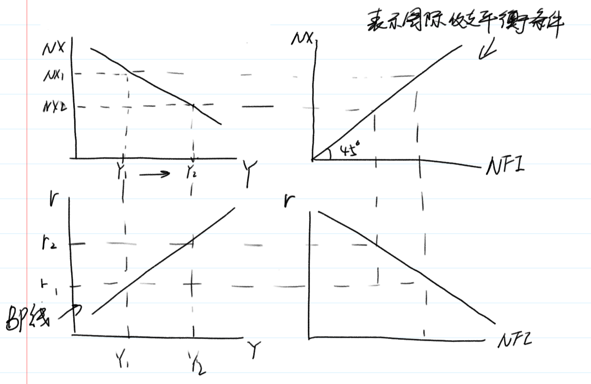
BP线：在国际收支平衡的条件下：$Y$ 与 $r$ 的组合，两者呈相关关系。
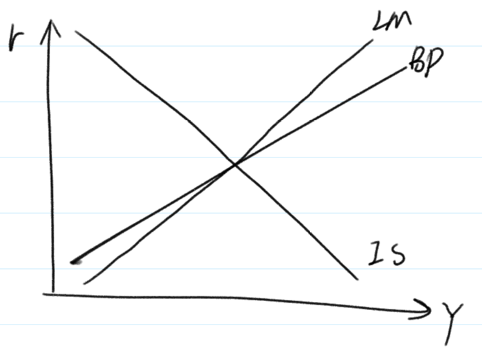
如果均衡，BP，IS，LM 线一定交在同一点上。
宏观经济政策和理论
主动性和被动性政策
政策效果滞后
政策制定者会遇到时滞有三种：
1. 识别时滞
2. 行动时滞
3. 生效时滞
识别时滞
这段用来掌握充分信息，以获取当前经济形式判断并识别经济运行中所出现问题的时间被称为识别时滞。
行动时滞
从认清问题到实施政策之间所需的时间叫做行动时滞。
就财政政策来说，其行动时滞尤其长。
识别时滞和行动时滞加载一起，合称为内部时滞。
生效时滞
与内部时滞相对应的是外部时滞，又称为生效时滞，指一项政策从形成之后到其真正对经济活动产生影响之间所用的时间。
生效时滞更显著地揭示出货币政策的弱点。
宏观经济的不确定性
由于时滞的存在，宏观经济政策要到实施后很久才会起效。这就要求政策制定者能精确地预测将来的经济情况。
所谓领先指标就是一些列领先于经济活动的起伏而波动的数据，领先指标的大幅升降有可能是经济启动或降温的先兆。
大型经济模型是政府机构和一些企业通过计算机设计并运行的数字模型。
卢卡斯批判
卢卡斯认为，传统的政策制定方法没有充分考虑预期对经济政策的作用。人们的预期会对经济政策的变动作出反应，并对经济政策形成反作用，从而抵消经济政策的效果。
每个家庭和每个厂商都会有意识地收集一切与自己的经济活动有关的信息并会对之做出恰如其分的反应。
这一论断又被称为「理性预期」，其核心思想正式人们胡根据经济情况的变化去调整自己的经济行为方式，同时会积极地收集与自身利益相关的信息并加以有效的利用。
有规则和无规则
政策制定者的可信度
无规则情况下经济政策滥用的原因：
1. 政策制定者不称职
2. 机会主义的指导思想
政策制定者不称职
1. 由于利益集团之间的权利争夺，政治局势漂泊不定，从而增加了经济政策制定的难度
2. 宏观经济运行本身是一件极其复杂的事情，而作为政治家的政策制定者通常并不具备足够的经济知识已做出正确的判断。
3. 普通的政策机制根本无法将这些经济「庸医」从真正称职的政治学家中剔除出去。
机会主义的指导思想
政策制定中的机会主义行为来源于政策制定者的目标与与公众福利的冲突。（政治经济周期）
时间不一致性
在特定时点上做出的相机抉择尽管在当时有可能是理性选择，但从长期来看却往往适得其反。
在很多情况下， 政策制定者希望以事前的声明来影响个人和企业的预期，进而使他们的行为选择向着政策制定者所希望的目标靠拢。但政策制定者频繁的事后反悔葬送了其事前声明的可信度。
真正有效的政策实际上是一种时间一致的政策，即从一开始就选择一个能实现希望目标的规则并遵循，而不是一个在每个时点都试图进行调整的政策。
货币政策规则
货币主义的代表人物弗里德曼进一步指出，货币供应量的变动是造成经济活动剧烈波动的最阔祸首。要想取得稳定的产出、就业和价格水平，唯一的出路是使货币供应量保持一个稳定而缓慢的增长速率。
由于传导机制的原因，稳定增长的货币供应量并不总能带来稳定的总需求。
较为普遍的观点是，货币政策规则应当允许货币供应对经济活动中的冲击进行适当的调整。
货币政策规则应如何应对经济活动中的冲击：
麦卡伦姆规则：价格水平的变动取决于货币当局控制的货币供给量增长率，货币流动速度增长率和实际 GDP 增长率。
该规则源自于：$MV = PY$
泰勒规则：货币当局应该在目标通货膨胀率基础上确定一个中央银行的基准利率水平，并按照经济活动的波动情况不断调整这一利率水平。
基准利率水平调整公式：
$$
基准利率 = 目标通胀率 + 2.5\% + \frac{1}{2}（实际通胀率 - 目标通胀率） + \frac{1}{2}（实际 GDP 增长率 - 潜在 GDP 增长率）
$$
财政政策规则
预算平衡策略。政府的支出不得突破税收收入，进而维持财政收支的平衡。
反对预算平衡策略的理由：
1. 首先，预算赤字或盈余可以对稳定经济有所帮助
2. 其次，在税后体系的运作过程中常常会出现对经济施加不当刺激的扭曲，而预算赤字或盈余则可以用来消除这种扭曲。
3. 此外，政府可以借助预算赤字将税收负担从当前居民身上转移到下一代人，这在某些非常时期对维护宏观经济的平稳运行是十分有益的。
经济波动理论的新发展（略）
1. 经济周期理论
2. 实际经济周期理论
3. 新凯恩斯理论
消费理论
凯恩斯消费理论
凯恩斯消费理论有三个重要的假设。
1. 「边际消费倾向」的假设：所谓边际消费倾向即消费者每多获得的一元钱收入，会用于消费的比例或数量。凯恩斯认为，根据基本的心理规律可以相信，当收入增加的时候人们会增加他们的消费，但消费增加的数量肯定比收入增加的数量要少，即边际消费倾向在 0 到 1 之间。
2. 平均消费倾向的假设：凯恩斯认为消费对收入的比率，即「平均消费倾向」，是随着收入的上升而下降的。
3. 决定消费因素的假设：决定储蓄的基本力量是收入而不是利率，利率在影响储蓄方面的作用不大。
凯恩斯的消费函数被写成：
$$
C = a + BY
$$
随着时间的推移，人们很快发现关于平均消费倾向随收入增加而下降的假设存在着问题。
实证研究结果表明，存在两种消费函数。使用家庭消费的短期时间序列数据，凯恩斯的消费函数得到了很好的证明。而使用家庭消费的长期实践序列数据，消费函数表现出有不变的平均消费倾向，凯恩斯的消费理论不在成立。
长期消费函数的公式：$C = KY$
大量的实证研究表明，长期实践序列的分析中，得到的是具有稳定的平均消费倾向的消费函数形式，亦即没有截距项的线性消费函数。
跨期选择理论（费雪）
跨期预算约束
假定消费者的一生可以分为两个时期。第一个是青年时期，第二时期是老年时期。
第一时期，储蓄 = 收入 - 消费：
$$
S = Y_1 - C_1
$$
第二期的消费等于改期收入加上第一期的储蓄，以及第一期储蓄赚到的利息，即：
$$
C_2 = Y_2 + (1 + r)S
$$
其中 $r$ 是实际利率。
综合上述两个方程就可以导出该消费者的跨期预算约束：
$$
C_2 = Y_2 + (1 + r)(Y_1 - C_1) \\
整理得：C_1 + \frac{C_2}{1 + r} = Y_1 + \frac{Y_2}{1 + r}
$$
画出消费者跨期预算约束线。
其中 $E$ 点自然是预算约束线上的一点，这是，消费者既不借钱也无储蓄。E 点也往往称为「禀赋点」
消费者偏好
由于消费者当前消费和未来消费都会带来效用，我们就可以用「无差异曲线」来分析跨期选择的时间偏好。
无差异曲线的这种形状代表不同时期的消费具有替代性。无差异曲线上每一点处切线的斜率就是在该消费水平组合上，第一时期消费对第二时期消费的「边际替代率」。（Marginal rate of substitution，简称 MRS）
跨期消费的均衡及其调整
跨期预算约束反映了消费者有支付能力的跨期选择的客观条件，无差异曲线现实了消费者对不同时期消费组合的主观态度，把两者放在一起，我们就可以考察消费者跨期消费的最优选择。
消费者跨期选择的均衡条件为：$1 + r = MRS$
很明显，收入增加，预算曲线和无差异曲线上移。利率改变，预算曲线关于禀赋点选择，无差异曲线平移。
借贷约束
上述跨期消费选择模型，既可以储蓄，也可以借贷，且利率相同。
考虑一种简单的借贷约束，当期消费不能超过当期收入。在上述模型中就是 $C_1 \le Y_1$ 必须成立。
生命周期假说
假设一个由工作消费预计可以活 $T$ 年，退休之前能工作 $R$ 年，每年工资收入 $Y$。退休以后不再有任何收入，并且利率为 $0$。该消费者的跨期消费选择为：
$$
C = \frac{RY}{T}
$$
生命周期模型认为财产在某一时期的家庭消费行为中也起着重要作用。假设消费者拥有一定数量的财产，平稳消费，用 $A$ 来表示，则上述消费函数可以表达为：
$$
C = \frac{A + RY}{T}
$$
啥价处理，$1 / T$ 记为 $\alpha$，$R / T$ 记为 $\beta$，则变为：
$$
C = \alpha A + \beta Y
$$
其中的 $\beta$ 是收入的边际消费倾向，$\alpha$ 则称为财产的边际消费倾向，分别是消费随着收入和财产变化而改变的边际比率。
由于长期中人们的财产 $A$ 随着收入的增长而一同增长。因此反映消费与收入之间关系的短期消费函数会发生平移。连接 $A$ 和 $B$ 两点，构成了一条长期消费曲线。该曲线的斜率，即平均消费倾向，始终为一常数。
这种长短期消费函数之间的差异，正是产生凯恩斯理论引出的消费之谜的原因。
永久收入假说
永久性收入假说考虑了人们的收入变动必然存在不确定性，将人们的收入分成了永久性收入 $Y^P$ 和暂时性收入 $Y^T$ 两个部分，即：
$$
Y = Y^P +Y^T
$$
弗里德曼认为人们的消费行为主要决定于永久性收入 $Y^P$，因为人们通常不喜欢消费水平的大幅波动，而希望消费水平相对稳定，所以会利用储蓄和借贷平衡收入水平的偶然波动，所以，永久性收入假说的消费函数是：
$$
C = \beta Y^P
$$
根据上述消费函数计算得到消费者的平均消费倾向为：
$$
\frac{C}{Y} = \beta \left(\frac{Y^P}{Y}\right)
$$
在图中，$C = \beta Y^P$ 是由原点出发的长期消费函数，具有平均消费倾向不变的性质。假定在某一年，消费者失业导致收入意外下降，实际收入小于永久性收入，暂时性收入为负。由于消费水平由永久性收入决定，与暂时性收入无关，因此消费者此时的消费水平，消费者的储蓄减少。反之相反。
投资理论
企业投资
意愿资本存量的决定
意愿的资本存量
资本的边际成本等于资本的租用价格。利润极大化的企业必然会把资本存量 $K$ 调整到这样一个水平：
$$
P \times MP_K = R \;或者\; MP_K = \frac{R}{P}
$$
即资本的边际产量等于资本的实际租用价格。
假定企业计划增加产量。在生产过程中，资本和劳动是两种重要的生产要素，两者是可以相互替代的。以相同的资本生产更多的产量，必须相应增加劳动，这会提高资本的边际产量。
如图所示，当企业计划产量提高，资本的边际产量曲线右移，为了使边际产量和原有的实际资本租用价格相等，企业愿意的资本存量增加。
因此，企业的意愿资本存量取决于两个因素：资本的实际租金 $R / P$ 和计划的产出水平 $Y$:
$$
K^* = g\left(\frac{R}{P}, Y\right)
$$
其中 $K^*$ 表示意愿的资本存量。资本的实际租用价格越高，企业愿意的资本存量越低；而计划产量水平越高，企业愿意的资本存量越高。
我们可以利用具体的生产函数来思考上述问题。生产函数：
$$
Y = AK^{\alpha}L^{1 - \alpha}
$$
将上式对资本存量求导，我们可得到资本的边际产量：
$$
MP_K = \alpha AK^{\alpha - 1}L^{1 - \alpha} = \alpha \frac{Y}{K}
$$
企业最终选择意愿的资本存量 $K^*$，使资本的边际产量恰好等于实际租用价格：
$$
\frac{R}{P} = \alpha \frac{Y}{K^*} \\
即 \; K^* = \alpha \frac{Y}{R / P}
$$
资本使用者成本
1. 利息收入：损失的利息收入，$P^K$ 表示价格，$i$ 表示名义利率，$iP^K$ 就是利息成本
2. 折旧
3. 资本品价格：资本品价格 $P^K$ 有可能发生变化，资本品价格的变化也会影响资本使用成本。当资本价格下降时，企业面临损失，意味着资本使用者成本的提高；反之相反。
所以，总的资本使用者成本 $C$ 就等于：
$$
C = iP^K + \delta P^K - \Delta P^K = P^K(i + \delta - \frac{\Delta P^K}{P^K})
$$
即资本成本取决于资本品的价格、利率、折旧率以及资本品的价格变动。
市场资本租用价格 $R$ 必须与资本使用者成本 $C$ 相等，也就是：
$$
R = P^K(i + \delta - \frac{\Delta P^K}{P^K})
$$
资本使用者成本与意愿资本存量
由于资本的实际租用价格由实际使用者成本构成，企业利润最大化条件可以用表达式为：
$$
MP_K = \left(\frac{P^K}{P}\right)(r + \sigma)
$$
也就是说，利润极大化的企业会把资本存量的数量调整到资本的边际产量等于实际使用者成本的水平。
投资的决定
投资与利率
企业的投资函数：
$$
\Delta K = K^* - K_{-1}
$$
把意愿资本存量 $K^*$ 的确定方程代入得：
$$
\Delta K = g\left(\frac{R}{P}, Y\right) - K_{-1}
$$
投资反向地取决于资本的实际租用价格，正向地取决于产量水平。
我们可以进一步把投资函数写成如下的形式。
$$
\Delta K = g\left[\frac{R}{P}\left(\frac{P^K}{P}, r, \delta\right)Y\right] - K_{-1}
$$
总投资 $I$ 就等于净投资加上折旧，即：
$$
I = \Delta K + \delta K_{-1}
$$
因此，总投资函数由下式给出：
$$
I = g\left[\frac{R}{P}\left(\frac{P^K}{P}, r, \sigma \right)Y\right] - (\delta - 1)K_{-1}
$$
当计划产量提高时，企业的意愿资本存量提高，因此投资额也提高，使得投资曲线右外移动，在图中变现为投资曲线右移，在给定的利率水平上，计划产量提高使企业的投资增加。
投资的滞后
企业意识到需要新增资本设备和新增的资本设备竣工投入使用之间有一段时期的滞后。
如果假定企业是逐步调整其资本存量的，就能反映投资过程中存在滞后性。
我们用企业在每一期选择意愿资本存量和期初资本存量之差的一个比例 $\lambda$ 代表投资的调整速度。当期的意愿资本存量和期初资本存量分别为 $K^*$ 和 $K_{-1}$，两者之间差额为 $K^* - K_{-1}$，企业的期末资本存量 $K$ 就等于：
$$
K = K_{-1} + \lambda(K^* - K_{-1})
$$
企业的净投资 $\Delta K = K - K_{-1}$，由此可以得到考虑投资过程中之后因素后修正的投资函数为：
$$
\Delta K = \lambda(K^* - K_{-1})
$$
图中反映了企业的资本存量由期初的 $K_{-1}$ 向意愿资本存量 $K^*$ 的逐步调整过程。图中横轴代表时间 $t$，纵轴代表资本存量 $K$。假定期初资本存量 $K_{-1} = 0$，资本调期速度 $\lambda = 0.5$，每一期新增投资额都是意愿资本存量和现有资本存量差额的一半。第一期的净投资额 $K_1$ 为 $0.5K^*$，第二期的净投资额 $K_2$ 只有第一期的一半，因为差额减少了一半。新增资本的投资过程按照这个速度一直持续到实际资本存量达到意愿的水平。由此可见，$\lambda$ 越大，这一过程越快，反之则相反。
融资约束
企业往往面临融资约束，即企业有借款的意愿却无法筹集到资金。融资约束限制了企业的投资活动。这时企业收入就与其投资决策发生了密切的联系。如果企业需要资金时无法从外部筹集到，那么当前的收入就会影响它们投资的能力。
短期衰退对企业而言，衰退对投资的影响很小。如果面临融资约束，衰退引起的企业当期利润下降就会限制它们进行投资的能力，使它们物力投资于未来能获利的投资项目。融资约束投资对当前经济状况的敏感性增加。
住房投资
住房投资的决定
我们的模型分为两部分：首先由住房的存量市场决定住房的均衡价格，然后由住房价格决定住房投资量。
图(a)：$K^H$ 表示住房的存量水平，$P^H$ 表示住房的价格，$P^H / P$ 表示住房的相对价格。曲线 $D^H$ 表示对住房存量的需求。
用垂直的 $S^K$ 曲线表示，因为既定的住房存量无法迅速改变。住房需求曲线和供给曲线的交点决定了住房资产的均衡的相对价格水平 $(P^H / P)_0$，均衡的住房存量则为固定不变的现存供给量 $K^H$。
图(b)：描述了住房的相对价格如何决定新住房的供给量。用 $I^H$ 表示新增住房的数量，$S^I$ 曲线表示住房相对价格函数的新增住房供给曲线。
住房需求和投资量的变动
图(a)：假定国民收入的增加扩大了人们对住房的需求。
图(b)：描述了房价上升的结果。
货币政策和税收的影响